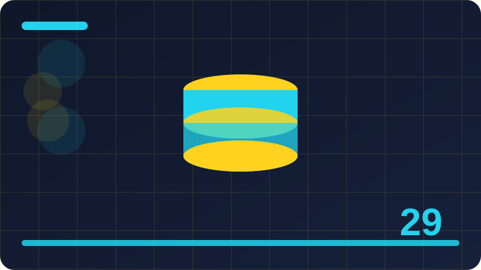

Chapter 29: Dates, Times and Formatting

Section 1: Why Dates Are Tricky
This section looks closely at why dates are tricky, a small but important part of working with dates, times and formatted output in Rust. At first the idea may sound abstract, especially if you are still getting used to Rust syntax, but the underlying purpose is very practical: it helps you write programs that are easier to read, easier to change, and easier to trust when they grow beyond a few lines. Think of why dates are tricky as one tool in a larger toolbox. You do not need to master every detail today. You need a clear picture of what it does, when it is useful, and what a simple, correct example looks like, so you can recognise it later and use it with confidence.
In plain words, why dates are tricky is about making your intention clear to both the compiler and to any person who reads your code later, including your future self. Rust rewards clarity, and many of its features exist to catch mistakes early, before a program ever runs. When you work with why dates are tricky, you are therefore not just learning a new keyword or pattern. You are learning a way of thinking about structure, responsibility, and boundaries. Ask yourself what belongs together, what should stay private, and what a caller really needs to know. Those questions will guide your choices far better than memorising rules, and they apply whether your program is tiny or large.
A helpful way to learn why dates are tricky is to start with the smallest example that still shows the idea working. Write it, run it, and read the output carefully before you add anything else. Notice how each part contributes to the whole, and notice what happens when you change a name, a value, or an order. This slow, deliberate approach may feel slower than copying a large example, but it builds a much stronger mental model. You learn where errors come from, how to read them, and how to fix them, rather than guessing. Over time, that model lets you build bigger programs without feeling lost, because each new piece rests on ideas you have already tested.
Beginners often struggle with why dates are tricky not because the idea is hard, but because they try to do too much at once or they skip the simple case. A common mistake is to assume the code should work and then to change several things when it does not, which hides the real cause. Another mistake is to copy an example without understanding what each line does, so a small change later breaks everything in a confusing way. Avoid both traps by keeping examples small, naming things clearly, and checking your understanding after each step. If a result surprises you, treat that surprise as useful information, not as failure, and investigate it calmly.
use chrono::Local;
fn main() {
let now = Local::now();
println!("today is {}", now.format("%Y-%m-%d"));
println!("time is {}", now.format("%H:%M"));
}Check: In your own words, explain why dates are tricky and give one small example of when you would use it.
Section 2: What a Date Really Means
This section looks closely at what a date really means, a small but important part of working with dates, times and formatted output in Rust. At first the idea may sound abstract, especially if you are still getting used to Rust syntax, but the underlying purpose is very practical: it helps you write programs that are easier to read, easier to change, and easier to trust when they grow beyond a few lines. Think of what a date really means as one tool in a larger toolbox. You do not need to master every detail today. You need a clear picture of what it does, when it is useful, and what a simple, correct example looks like, so you can recognise it later and use it with confidence.
In plain words, what a date really means is about making your intention clear to both the compiler and to any person who reads your code later, including your future self. Rust rewards clarity, and many of its features exist to catch mistakes early, before a program ever runs. When you work with what a date really means, you are therefore not just learning a new keyword or pattern. You are learning a way of thinking about structure, responsibility, and boundaries. Ask yourself what belongs together, what should stay private, and what a caller really needs to know. Those questions will guide your choices far better than memorising rules, and they apply whether your program is tiny or large.
A helpful way to learn what a date really means is to start with the smallest example that still shows the idea working. Write it, run it, and read the output carefully before you add anything else. Notice how each part contributes to the whole, and notice what happens when you change a name, a value, or an order. This slow, deliberate approach may feel slower than copying a large example, but it builds a much stronger mental model. You learn where errors come from, how to read them, and how to fix them, rather than guessing. Over time, that model lets you build bigger programs without feeling lost, because each new piece rests on ideas you have already tested.
Beginners often struggle with what a date really means not because the idea is hard, but because they try to do too much at once or they skip the simple case. A common mistake is to assume the code should work and then to change several things when it does not, which hides the real cause. Another mistake is to copy an example without understanding what each line does, so a small change later breaks everything in a confusing way. Avoid both traps by keeping examples small, naming things clearly, and checking your understanding after each step. If a result surprises you, treat that surprise as useful information, not as failure, and investigate it calmly.
use chrono::Local;
fn main() {
let now = Local::now();
println!("today is {}", now.format("%Y-%m-%d"));
println!("time is {}", now.format("%H:%M"));
}Check: In your own words, explain what a date really means and give one small example of when you would use it.
Section 3: What a Time Really Means
This section looks closely at what a time really means, a small but important part of working with dates, times and formatted output in Rust. At first the idea may sound abstract, especially if you are still getting used to Rust syntax, but the underlying purpose is very practical: it helps you write programs that are easier to read, easier to change, and easier to trust when they grow beyond a few lines. Think of what a time really means as one tool in a larger toolbox. You do not need to master every detail today. You need a clear picture of what it does, when it is useful, and what a simple, correct example looks like, so you can recognise it later and use it with confidence.
In plain words, what a time really means is about making your intention clear to both the compiler and to any person who reads your code later, including your future self. Rust rewards clarity, and many of its features exist to catch mistakes early, before a program ever runs. When you work with what a time really means, you are therefore not just learning a new keyword or pattern. You are learning a way of thinking about structure, responsibility, and boundaries. Ask yourself what belongs together, what should stay private, and what a caller really needs to know. Those questions will guide your choices far better than memorising rules, and they apply whether your program is tiny or large.
A helpful way to learn what a time really means is to start with the smallest example that still shows the idea working. Write it, run it, and read the output carefully before you add anything else. Notice how each part contributes to the whole, and notice what happens when you change a name, a value, or an order. This slow, deliberate approach may feel slower than copying a large example, but it builds a much stronger mental model. You learn where errors come from, how to read them, and how to fix them, rather than guessing. Over time, that model lets you build bigger programs without feeling lost, because each new piece rests on ideas you have already tested.
Beginners often struggle with what a time really means not because the idea is hard, but because they try to do too much at once or they skip the simple case. A common mistake is to assume the code should work and then to change several things when it does not, which hides the real cause. Another mistake is to copy an example without understanding what each line does, so a small change later breaks everything in a confusing way. Avoid both traps by keeping examples small, naming things clearly, and checking your understanding after each step. If a result surprises you, treat that surprise as useful information, not as failure, and investigate it calmly.
use chrono::Local;
fn main() {
let now = Local::now();
println!("today is {}", now.format("%Y-%m-%d"));
println!("time is {}", now.format("%H:%M"));
}Check: In your own words, explain what a time really means and give one small example of when you would use it.
Section 4: Time Zones in Plain Words
This section looks closely at time zones in plain words, a small but important part of working with dates, times and formatted output in Rust. At first the idea may sound abstract, especially if you are still getting used to Rust syntax, but the underlying purpose is very practical: it helps you write programs that are easier to read, easier to change, and easier to trust when they grow beyond a few lines. Think of time zones in plain words as one tool in a larger toolbox. You do not need to master every detail today. You need a clear picture of what it does, when it is useful, and what a simple, correct example looks like, so you can recognise it later and use it with confidence.
In plain words, time zones in plain words is about making your intention clear to both the compiler and to any person who reads your code later, including your future self. Rust rewards clarity, and many of its features exist to catch mistakes early, before a program ever runs. When you work with time zones in plain words, you are therefore not just learning a new keyword or pattern. You are learning a way of thinking about structure, responsibility, and boundaries. Ask yourself what belongs together, what should stay private, and what a caller really needs to know. Those questions will guide your choices far better than memorising rules, and they apply whether your program is tiny or large.
A helpful way to learn time zones in plain words is to start with the smallest example that still shows the idea working. Write it, run it, and read the output carefully before you add anything else. Notice how each part contributes to the whole, and notice what happens when you change a name, a value, or an order. This slow, deliberate approach may feel slower than copying a large example, but it builds a much stronger mental model. You learn where errors come from, how to read them, and how to fix them, rather than guessing. Over time, that model lets you build bigger programs without feeling lost, because each new piece rests on ideas you have already tested.
Beginners often struggle with time zones in plain words not because the idea is hard, but because they try to do too much at once or they skip the simple case. A common mistake is to assume the code should work and then to change several things when it does not, which hides the real cause. Another mistake is to copy an example without understanding what each line does, so a small change later breaks everything in a confusing way. Avoid both traps by keeping examples small, naming things clearly, and checking your understanding after each step. If a result surprises you, treat that surprise as useful information, not as failure, and investigate it calmly.
use chrono::Local;
fn main() {
let now = Local::now();
println!("today is {}", now.format("%Y-%m-%d"));
println!("time is {}", now.format("%H:%M"));
}Check: In your own words, explain time zones in plain words and give one small example of when you would use it.
Section 5: UTC Explained Simply
This section looks closely at utc explained simply, a small but important part of working with dates, times and formatted output in Rust. At first the idea may sound abstract, especially if you are still getting used to Rust syntax, but the underlying purpose is very practical: it helps you write programs that are easier to read, easier to change, and easier to trust when they grow beyond a few lines. Think of utc explained simply as one tool in a larger toolbox. You do not need to master every detail today. You need a clear picture of what it does, when it is useful, and what a simple, correct example looks like, so you can recognise it later and use it with confidence.
In plain words, utc explained simply is about making your intention clear to both the compiler and to any person who reads your code later, including your future self. Rust rewards clarity, and many of its features exist to catch mistakes early, before a program ever runs. When you work with utc explained simply, you are therefore not just learning a new keyword or pattern. You are learning a way of thinking about structure, responsibility, and boundaries. Ask yourself what belongs together, what should stay private, and what a caller really needs to know. Those questions will guide your choices far better than memorising rules, and they apply whether your program is tiny or large.
A helpful way to learn utc explained simply is to start with the smallest example that still shows the idea working. Write it, run it, and read the output carefully before you add anything else. Notice how each part contributes to the whole, and notice what happens when you change a name, a value, or an order. This slow, deliberate approach may feel slower than copying a large example, but it builds a much stronger mental model. You learn where errors come from, how to read them, and how to fix them, rather than guessing. Over time, that model lets you build bigger programs without feeling lost, because each new piece rests on ideas you have already tested.
Beginners often struggle with utc explained simply not because the idea is hard, but because they try to do too much at once or they skip the simple case. A common mistake is to assume the code should work and then to change several things when it does not, which hides the real cause. Another mistake is to copy an example without understanding what each line does, so a small change later breaks everything in a confusing way. Avoid both traps by keeping examples small, naming things clearly, and checking your understanding after each step. If a result surprises you, treat that surprise as useful information, not as failure, and investigate it calmly. For utc explained simply, practising this idea in a tiny program helps it stick far better than only reading about it, because you see the compiler response and the program output side by side.
use chrono::Local;
fn main() {
let now = Local::now();
println!("today is {}", now.format("%Y-%m-%d"));
println!("time is {}", now.format("%H:%M"));
}Check: In your own words, explain utc explained simply and give one small example of when you would use it.
Section 6: Local Time Versus UTC
This section looks closely at local time versus utc, a small but important part of working with dates, times and formatted output in Rust. At first the idea may sound abstract, especially if you are still getting used to Rust syntax, but the underlying purpose is very practical: it helps you write programs that are easier to read, easier to change, and easier to trust when they grow beyond a few lines. Think of local time versus utc as one tool in a larger toolbox. You do not need to master every detail today. You need a clear picture of what it does, when it is useful, and what a simple, correct example looks like, so you can recognise it later and use it with confidence.
In plain words, local time versus utc is about making your intention clear to both the compiler and to any person who reads your code later, including your future self. Rust rewards clarity, and many of its features exist to catch mistakes early, before a program ever runs. When you work with local time versus utc, you are therefore not just learning a new keyword or pattern. You are learning a way of thinking about structure, responsibility, and boundaries. Ask yourself what belongs together, what should stay private, and what a caller really needs to know. Those questions will guide your choices far better than memorising rules, and they apply whether your program is tiny or large.
A helpful way to learn local time versus utc is to start with the smallest example that still shows the idea working. Write it, run it, and read the output carefully before you add anything else. Notice how each part contributes to the whole, and notice what happens when you change a name, a value, or an order. This slow, deliberate approach may feel slower than copying a large example, but it builds a much stronger mental model. You learn where errors come from, how to read them, and how to fix them, rather than guessing. Over time, that model lets you build bigger programs without feeling lost, because each new piece rests on ideas you have already tested.
Beginners often struggle with local time versus utc not because the idea is hard, but because they try to do too much at once or they skip the simple case. A common mistake is to assume the code should work and then to change several things when it does not, which hides the real cause. Another mistake is to copy an example without understanding what each line does, so a small change later breaks everything in a confusing way. Avoid both traps by keeping examples small, naming things clearly, and checking your understanding after each step. If a result surprises you, treat that surprise as useful information, not as failure, and investigate it calmly.
use chrono::Local;
fn main() {
let now = Local::now();
println!("today is {}", now.format("%Y-%m-%d"));
println!("time is {}", now.format("%H:%M"));
}Check: In your own words, explain local time versus utc and give one small example of when you would use it.
Section 7: Adding Chrono to a Project
This section looks closely at adding chrono to a project, a small but important part of working with dates, times and formatted output in Rust. At first the idea may sound abstract, especially if you are still getting used to Rust syntax, but the underlying purpose is very practical: it helps you write programs that are easier to read, easier to change, and easier to trust when they grow beyond a few lines. Think of adding chrono to a project as one tool in a larger toolbox. You do not need to master every detail today. You need a clear picture of what it does, when it is useful, and what a simple, correct example looks like, so you can recognise it later and use it with confidence.
In plain words, adding chrono to a project is about making your intention clear to both the compiler and to any person who reads your code later, including your future self. Rust rewards clarity, and many of its features exist to catch mistakes early, before a program ever runs. When you work with adding chrono to a project, you are therefore not just learning a new keyword or pattern. You are learning a way of thinking about structure, responsibility, and boundaries. Ask yourself what belongs together, what should stay private, and what a caller really needs to know. Those questions will guide your choices far better than memorising rules, and they apply whether your program is tiny or large.
A helpful way to learn adding chrono to a project is to start with the smallest example that still shows the idea working. Write it, run it, and read the output carefully before you add anything else. Notice how each part contributes to the whole, and notice what happens when you change a name, a value, or an order. This slow, deliberate approach may feel slower than copying a large example, but it builds a much stronger mental model. You learn where errors come from, how to read them, and how to fix them, rather than guessing. Over time, that model lets you build bigger programs without feeling lost, because each new piece rests on ideas you have already tested.
Beginners often struggle with adding chrono to a project not because the idea is hard, but because they try to do too much at once or they skip the simple case. A common mistake is to assume the code should work and then to change several things when it does not, which hides the real cause. Another mistake is to copy an example without understanding what each line does, so a small change later breaks everything in a confusing way. Avoid both traps by keeping examples small, naming things clearly, and checking your understanding after each step. If a result surprises you, treat that surprise as useful information, not as failure, and investigate it calmly.
use chrono::Local;
fn main() {
let now = Local::now();
println!("today is {}", now.format("%Y-%m-%d"));
println!("time is {}", now.format("%H:%M"));
}Check: In your own words, explain adding chrono to a project and give one small example of when you would use it.
Section 8: Getting Today's Date
This section looks closely at getting today's date, a small but important part of working with dates, times and formatted output in Rust. At first the idea may sound abstract, especially if you are still getting used to Rust syntax, but the underlying purpose is very practical: it helps you write programs that are easier to read, easier to change, and easier to trust when they grow beyond a few lines. Think of getting today's date as one tool in a larger toolbox. You do not need to master every detail today. You need a clear picture of what it does, when it is useful, and what a simple, correct example looks like, so you can recognise it later and use it with confidence.
In plain words, getting today's date is about making your intention clear to both the compiler and to any person who reads your code later, including your future self. Rust rewards clarity, and many of its features exist to catch mistakes early, before a program ever runs. When you work with getting today's date, you are therefore not just learning a new keyword or pattern. You are learning a way of thinking about structure, responsibility, and boundaries. Ask yourself what belongs together, what should stay private, and what a caller really needs to know. Those questions will guide your choices far better than memorising rules, and they apply whether your program is tiny or large.
A helpful way to learn getting today's date is to start with the smallest example that still shows the idea working. Write it, run it, and read the output carefully before you add anything else. Notice how each part contributes to the whole, and notice what happens when you change a name, a value, or an order. This slow, deliberate approach may feel slower than copying a large example, but it builds a much stronger mental model. You learn where errors come from, how to read them, and how to fix them, rather than guessing. Over time, that model lets you build bigger programs without feeling lost, because each new piece rests on ideas you have already tested.
Beginners often struggle with getting today's date not because the idea is hard, but because they try to do too much at once or they skip the simple case. A common mistake is to assume the code should work and then to change several things when it does not, which hides the real cause. Another mistake is to copy an example without understanding what each line does, so a small change later breaks everything in a confusing way. Avoid both traps by keeping examples small, naming things clearly, and checking your understanding after each step. If a result surprises you, treat that surprise as useful information, not as failure, and investigate it calmly. For getting today's date, practising this idea in a tiny program helps it stick far better than only reading about it, because you see the compiler response and the program output side by side.
use chrono::Local;
fn main() {
let now = Local::now();
println!("today is {}", now.format("%Y-%m-%d"));
println!("time is {}", now.format("%H:%M"));
}Check: In your own words, explain getting today's date and give one small example of when you would use it.
Section 9: Getting the Current Time
This section looks closely at getting the current time, a small but important part of working with dates, times and formatted output in Rust. At first the idea may sound abstract, especially if you are still getting used to Rust syntax, but the underlying purpose is very practical: it helps you write programs that are easier to read, easier to change, and easier to trust when they grow beyond a few lines. Think of getting the current time as one tool in a larger toolbox. You do not need to master every detail today. You need a clear picture of what it does, when it is useful, and what a simple, correct example looks like, so you can recognise it later and use it with confidence.
In plain words, getting the current time is about making your intention clear to both the compiler and to any person who reads your code later, including your future self. Rust rewards clarity, and many of its features exist to catch mistakes early, before a program ever runs. When you work with getting the current time, you are therefore not just learning a new keyword or pattern. You are learning a way of thinking about structure, responsibility, and boundaries. Ask yourself what belongs together, what should stay private, and what a caller really needs to know. Those questions will guide your choices far better than memorising rules, and they apply whether your program is tiny or large.
A helpful way to learn getting the current time is to start with the smallest example that still shows the idea working. Write it, run it, and read the output carefully before you add anything else. Notice how each part contributes to the whole, and notice what happens when you change a name, a value, or an order. This slow, deliberate approach may feel slower than copying a large example, but it builds a much stronger mental model. You learn where errors come from, how to read them, and how to fix them, rather than guessing. Over time, that model lets you build bigger programs without feeling lost, because each new piece rests on ideas you have already tested.
Beginners often struggle with getting the current time not because the idea is hard, but because they try to do too much at once or they skip the simple case. A common mistake is to assume the code should work and then to change several things when it does not, which hides the real cause. Another mistake is to copy an example without understanding what each line does, so a small change later breaks everything in a confusing way. Avoid both traps by keeping examples small, naming things clearly, and checking your understanding after each step. If a result surprises you, treat that surprise as useful information, not as failure, and investigate it calmly.
use chrono::Local;
fn main() {
let now = Local::now();
println!("today is {}", now.format("%Y-%m-%d"));
println!("time is {}", now.format("%H:%M"));
}Check: In your own words, explain getting the current time and give one small example of when you would use it.
Section 10: Creating a Specific Date
This section looks closely at creating a specific date, a small but important part of working with dates, times and formatted output in Rust. At first the idea may sound abstract, especially if you are still getting used to Rust syntax, but the underlying purpose is very practical: it helps you write programs that are easier to read, easier to change, and easier to trust when they grow beyond a few lines. Think of creating a specific date as one tool in a larger toolbox. You do not need to master every detail today. You need a clear picture of what it does, when it is useful, and what a simple, correct example looks like, so you can recognise it later and use it with confidence.
In plain words, creating a specific date is about making your intention clear to both the compiler and to any person who reads your code later, including your future self. Rust rewards clarity, and many of its features exist to catch mistakes early, before a program ever runs. When you work with creating a specific date, you are therefore not just learning a new keyword or pattern. You are learning a way of thinking about structure, responsibility, and boundaries. Ask yourself what belongs together, what should stay private, and what a caller really needs to know. Those questions will guide your choices far better than memorising rules, and they apply whether your program is tiny or large.
A helpful way to learn creating a specific date is to start with the smallest example that still shows the idea working. Write it, run it, and read the output carefully before you add anything else. Notice how each part contributes to the whole, and notice what happens when you change a name, a value, or an order. This slow, deliberate approach may feel slower than copying a large example, but it builds a much stronger mental model. You learn where errors come from, how to read them, and how to fix them, rather than guessing. Over time, that model lets you build bigger programs without feeling lost, because each new piece rests on ideas you have already tested.
Beginners often struggle with creating a specific date not because the idea is hard, but because they try to do too much at once or they skip the simple case. A common mistake is to assume the code should work and then to change several things when it does not, which hides the real cause. Another mistake is to copy an example without understanding what each line does, so a small change later breaks everything in a confusing way. Avoid both traps by keeping examples small, naming things clearly, and checking your understanding after each step. If a result surprises you, treat that surprise as useful information, not as failure, and investigate it calmly.
use chrono::Local;
fn main() {
let now = Local::now();
println!("today is {}", now.format("%Y-%m-%d"));
println!("time is {}", now.format("%H:%M"));
}Check: In your own words, explain creating a specific date and give one small example of when you would use it.
Section 11: Creating a Specific Time
This section looks closely at creating a specific time, a small but important part of working with dates, times and formatted output in Rust. At first the idea may sound abstract, especially if you are still getting used to Rust syntax, but the underlying purpose is very practical: it helps you write programs that are easier to read, easier to change, and easier to trust when they grow beyond a few lines. Think of creating a specific time as one tool in a larger toolbox. You do not need to master every detail today. You need a clear picture of what it does, when it is useful, and what a simple, correct example looks like, so you can recognise it later and use it with confidence.
In plain words, creating a specific time is about making your intention clear to both the compiler and to any person who reads your code later, including your future self. Rust rewards clarity, and many of its features exist to catch mistakes early, before a program ever runs. When you work with creating a specific time, you are therefore not just learning a new keyword or pattern. You are learning a way of thinking about structure, responsibility, and boundaries. Ask yourself what belongs together, what should stay private, and what a caller really needs to know. Those questions will guide your choices far better than memorising rules, and they apply whether your program is tiny or large.
A helpful way to learn creating a specific time is to start with the smallest example that still shows the idea working. Write it, run it, and read the output carefully before you add anything else. Notice how each part contributes to the whole, and notice what happens when you change a name, a value, or an order. This slow, deliberate approach may feel slower than copying a large example, but it builds a much stronger mental model. You learn where errors come from, how to read them, and how to fix them, rather than guessing. Over time, that model lets you build bigger programs without feeling lost, because each new piece rests on ideas you have already tested.
Beginners often struggle with creating a specific time not because the idea is hard, but because they try to do too much at once or they skip the simple case. A common mistake is to assume the code should work and then to change several things when it does not, which hides the real cause. Another mistake is to copy an example without understanding what each line does, so a small change later breaks everything in a confusing way. Avoid both traps by keeping examples small, naming things clearly, and checking your understanding after each step. If a result surprises you, treat that surprise as useful information, not as failure, and investigate it calmly.
use chrono::Local;
fn main() {
let now = Local::now();
println!("today is {}", now.format("%Y-%m-%d"));
println!("time is {}", now.format("%H:%M"));
}Check: In your own words, explain creating a specific time and give one small example of when you would use it.
Section 12: Combining Date and Time
This section looks closely at combining date and time, a small but important part of working with dates, times and formatted output in Rust. At first the idea may sound abstract, especially if you are still getting used to Rust syntax, but the underlying purpose is very practical: it helps you write programs that are easier to read, easier to change, and easier to trust when they grow beyond a few lines. Think of combining date and time as one tool in a larger toolbox. You do not need to master every detail today. You need a clear picture of what it does, when it is useful, and what a simple, correct example looks like, so you can recognise it later and use it with confidence.
In plain words, combining date and time is about making your intention clear to both the compiler and to any person who reads your code later, including your future self. Rust rewards clarity, and many of its features exist to catch mistakes early, before a program ever runs. When you work with combining date and time, you are therefore not just learning a new keyword or pattern. You are learning a way of thinking about structure, responsibility, and boundaries. Ask yourself what belongs together, what should stay private, and what a caller really needs to know. Those questions will guide your choices far better than memorising rules, and they apply whether your program is tiny or large.
A helpful way to learn combining date and time is to start with the smallest example that still shows the idea working. Write it, run it, and read the output carefully before you add anything else. Notice how each part contributes to the whole, and notice what happens when you change a name, a value, or an order. This slow, deliberate approach may feel slower than copying a large example, but it builds a much stronger mental model. You learn where errors come from, how to read them, and how to fix them, rather than guessing. Over time, that model lets you build bigger programs without feeling lost, because each new piece rests on ideas you have already tested.
Beginners often struggle with combining date and time not because the idea is hard, but because they try to do too much at once or they skip the simple case. A common mistake is to assume the code should work and then to change several things when it does not, which hides the real cause. Another mistake is to copy an example without understanding what each line does, so a small change later breaks everything in a confusing way. Avoid both traps by keeping examples small, naming things clearly, and checking your understanding after each step. If a result surprises you, treat that surprise as useful information, not as failure, and investigate it calmly.
use chrono::Local;
fn main() {
let now = Local::now();
println!("today is {}", now.format("%Y-%m-%d"));
println!("time is {}", now.format("%H:%M"));
}Check: In your own words, explain combining date and time and give one small example of when you would use it.
Section 13: Formatting a Date as Text
This section looks closely at formatting a date as text, a small but important part of working with dates, times and formatted output in Rust. At first the idea may sound abstract, especially if you are still getting used to Rust syntax, but the underlying purpose is very practical: it helps you write programs that are easier to read, easier to change, and easier to trust when they grow beyond a few lines. Think of formatting a date as text as one tool in a larger toolbox. You do not need to master every detail today. You need a clear picture of what it does, when it is useful, and what a simple, correct example looks like, so you can recognise it later and use it with confidence.
In plain words, formatting a date as text is about making your intention clear to both the compiler and to any person who reads your code later, including your future self. Rust rewards clarity, and many of its features exist to catch mistakes early, before a program ever runs. When you work with formatting a date as text, you are therefore not just learning a new keyword or pattern. You are learning a way of thinking about structure, responsibility, and boundaries. Ask yourself what belongs together, what should stay private, and what a caller really needs to know. Those questions will guide your choices far better than memorising rules, and they apply whether your program is tiny or large.
A helpful way to learn formatting a date as text is to start with the smallest example that still shows the idea working. Write it, run it, and read the output carefully before you add anything else. Notice how each part contributes to the whole, and notice what happens when you change a name, a value, or an order. This slow, deliberate approach may feel slower than copying a large example, but it builds a much stronger mental model. You learn where errors come from, how to read them, and how to fix them, rather than guessing. Over time, that model lets you build bigger programs without feeling lost, because each new piece rests on ideas you have already tested.
Beginners often struggle with formatting a date as text not because the idea is hard, but because they try to do too much at once or they skip the simple case. A common mistake is to assume the code should work and then to change several things when it does not, which hides the real cause. Another mistake is to copy an example without understanding what each line does, so a small change later breaks everything in a confusing way. Avoid both traps by keeping examples small, naming things clearly, and checking your understanding after each step. If a result surprises you, treat that surprise as useful information, not as failure, and investigate it calmly.
use chrono::Local;
fn main() {
let now = Local::now();
println!("today is {}", now.format("%Y-%m-%d"));
println!("time is {}", now.format("%H:%M"));
}Check: In your own words, explain formatting a date as text and give one small example of when you would use it.
Section 14: Common Date Formats
This section looks closely at common date formats, a small but important part of working with dates, times and formatted output in Rust. At first the idea may sound abstract, especially if you are still getting used to Rust syntax, but the underlying purpose is very practical: it helps you write programs that are easier to read, easier to change, and easier to trust when they grow beyond a few lines. Think of common date formats as one tool in a larger toolbox. You do not need to master every detail today. You need a clear picture of what it does, when it is useful, and what a simple, correct example looks like, so you can recognise it later and use it with confidence.
In plain words, common date formats is about making your intention clear to both the compiler and to any person who reads your code later, including your future self. Rust rewards clarity, and many of its features exist to catch mistakes early, before a program ever runs. When you work with common date formats, you are therefore not just learning a new keyword or pattern. You are learning a way of thinking about structure, responsibility, and boundaries. Ask yourself what belongs together, what should stay private, and what a caller really needs to know. Those questions will guide your choices far better than memorising rules, and they apply whether your program is tiny or large.
A helpful way to learn common date formats is to start with the smallest example that still shows the idea working. Write it, run it, and read the output carefully before you add anything else. Notice how each part contributes to the whole, and notice what happens when you change a name, a value, or an order. This slow, deliberate approach may feel slower than copying a large example, but it builds a much stronger mental model. You learn where errors come from, how to read them, and how to fix them, rather than guessing. Over time, that model lets you build bigger programs without feeling lost, because each new piece rests on ideas you have already tested.
Beginners often struggle with common date formats not because the idea is hard, but because they try to do too much at once or they skip the simple case. A common mistake is to assume the code should work and then to change several things when it does not, which hides the real cause. Another mistake is to copy an example without understanding what each line does, so a small change later breaks everything in a confusing way. Avoid both traps by keeping examples small, naming things clearly, and checking your understanding after each step. If a result surprises you, treat that surprise as useful information, not as failure, and investigate it calmly. For common date formats, practising this idea in a tiny program helps it stick far better than only reading about it, because you see the compiler response and the program output side by side.
use chrono::Local;
fn main() {
let now = Local::now();
println!("today is {}", now.format("%Y-%m-%d"));
println!("time is {}", now.format("%H:%M"));
}Check: In your own words, explain common date formats and give one small example of when you would use it.
Section 15: Custom Format Strings
This section looks closely at custom format strings, a small but important part of working with dates, times and formatted output in Rust. At first the idea may sound abstract, especially if you are still getting used to Rust syntax, but the underlying purpose is very practical: it helps you write programs that are easier to read, easier to change, and easier to trust when they grow beyond a few lines. Think of custom format strings as one tool in a larger toolbox. You do not need to master every detail today. You need a clear picture of what it does, when it is useful, and what a simple, correct example looks like, so you can recognise it later and use it with confidence.
In plain words, custom format strings is about making your intention clear to both the compiler and to any person who reads your code later, including your future self. Rust rewards clarity, and many of its features exist to catch mistakes early, before a program ever runs. When you work with custom format strings, you are therefore not just learning a new keyword or pattern. You are learning a way of thinking about structure, responsibility, and boundaries. Ask yourself what belongs together, what should stay private, and what a caller really needs to know. Those questions will guide your choices far better than memorising rules, and they apply whether your program is tiny or large.
A helpful way to learn custom format strings is to start with the smallest example that still shows the idea working. Write it, run it, and read the output carefully before you add anything else. Notice how each part contributes to the whole, and notice what happens when you change a name, a value, or an order. This slow, deliberate approach may feel slower than copying a large example, but it builds a much stronger mental model. You learn where errors come from, how to read them, and how to fix them, rather than guessing. Over time, that model lets you build bigger programs without feeling lost, because each new piece rests on ideas you have already tested.
Beginners often struggle with custom format strings not because the idea is hard, but because they try to do too much at once or they skip the simple case. A common mistake is to assume the code should work and then to change several things when it does not, which hides the real cause. Another mistake is to copy an example without understanding what each line does, so a small change later breaks everything in a confusing way. Avoid both traps by keeping examples small, naming things clearly, and checking your understanding after each step. If a result surprises you, treat that surprise as useful information, not as failure, and investigate it calmly. For custom format strings, practising this idea in a tiny program helps it stick far better than only reading about it, because you see the compiler response and the program output side by side.
use chrono::Local;
fn main() {
let now = Local::now();
println!("today is {}", now.format("%Y-%m-%d"));
println!("time is {}", now.format("%H:%M"));
}Check: In your own words, explain custom format strings and give one small example of when you would use it.
Section 16: Parsing a Date from Text
This section looks closely at parsing a date from text, a small but important part of working with dates, times and formatted output in Rust. At first the idea may sound abstract, especially if you are still getting used to Rust syntax, but the underlying purpose is very practical: it helps you write programs that are easier to read, easier to change, and easier to trust when they grow beyond a few lines. Think of parsing a date from text as one tool in a larger toolbox. You do not need to master every detail today. You need a clear picture of what it does, when it is useful, and what a simple, correct example looks like, so you can recognise it later and use it with confidence.
In plain words, parsing a date from text is about making your intention clear to both the compiler and to any person who reads your code later, including your future self. Rust rewards clarity, and many of its features exist to catch mistakes early, before a program ever runs. When you work with parsing a date from text, you are therefore not just learning a new keyword or pattern. You are learning a way of thinking about structure, responsibility, and boundaries. Ask yourself what belongs together, what should stay private, and what a caller really needs to know. Those questions will guide your choices far better than memorising rules, and they apply whether your program is tiny or large.
A helpful way to learn parsing a date from text is to start with the smallest example that still shows the idea working. Write it, run it, and read the output carefully before you add anything else. Notice how each part contributes to the whole, and notice what happens when you change a name, a value, or an order. This slow, deliberate approach may feel slower than copying a large example, but it builds a much stronger mental model. You learn where errors come from, how to read them, and how to fix them, rather than guessing. Over time, that model lets you build bigger programs without feeling lost, because each new piece rests on ideas you have already tested.
Beginners often struggle with parsing a date from text not because the idea is hard, but because they try to do too much at once or they skip the simple case. A common mistake is to assume the code should work and then to change several things when it does not, which hides the real cause. Another mistake is to copy an example without understanding what each line does, so a small change later breaks everything in a confusing way. Avoid both traps by keeping examples small, naming things clearly, and checking your understanding after each step. If a result surprises you, treat that surprise as useful information, not as failure, and investigate it calmly.
use chrono::Local;
fn main() {
let now = Local::now();
println!("today is {}", now.format("%Y-%m-%d"));
println!("time is {}", now.format("%H:%M"));
}Check: In your own words, explain parsing a date from text and give one small example of when you would use it.
Section 17: Parsing a Time from Text
This section looks closely at parsing a time from text, a small but important part of working with dates, times and formatted output in Rust. At first the idea may sound abstract, especially if you are still getting used to Rust syntax, but the underlying purpose is very practical: it helps you write programs that are easier to read, easier to change, and easier to trust when they grow beyond a few lines. Think of parsing a time from text as one tool in a larger toolbox. You do not need to master every detail today. You need a clear picture of what it does, when it is useful, and what a simple, correct example looks like, so you can recognise it later and use it with confidence.
In plain words, parsing a time from text is about making your intention clear to both the compiler and to any person who reads your code later, including your future self. Rust rewards clarity, and many of its features exist to catch mistakes early, before a program ever runs. When you work with parsing a time from text, you are therefore not just learning a new keyword or pattern. You are learning a way of thinking about structure, responsibility, and boundaries. Ask yourself what belongs together, what should stay private, and what a caller really needs to know. Those questions will guide your choices far better than memorising rules, and they apply whether your program is tiny or large.
A helpful way to learn parsing a time from text is to start with the smallest example that still shows the idea working. Write it, run it, and read the output carefully before you add anything else. Notice how each part contributes to the whole, and notice what happens when you change a name, a value, or an order. This slow, deliberate approach may feel slower than copying a large example, but it builds a much stronger mental model. You learn where errors come from, how to read them, and how to fix them, rather than guessing. Over time, that model lets you build bigger programs without feeling lost, because each new piece rests on ideas you have already tested.
Beginners often struggle with parsing a time from text not because the idea is hard, but because they try to do too much at once or they skip the simple case. A common mistake is to assume the code should work and then to change several things when it does not, which hides the real cause. Another mistake is to copy an example without understanding what each line does, so a small change later breaks everything in a confusing way. Avoid both traps by keeping examples small, naming things clearly, and checking your understanding after each step. If a result surprises you, treat that surprise as useful information, not as failure, and investigate it calmly.
use chrono::Local;
fn main() {
let now = Local::now();
println!("today is {}", now.format("%Y-%m-%d"));
println!("time is {}", now.format("%H:%M"));
}Check: In your own words, explain parsing a time from text and give one small example of when you would use it.
Section 18: Handling Invalid Dates
This section looks closely at handling invalid dates, a small but important part of working with dates, times and formatted output in Rust. At first the idea may sound abstract, especially if you are still getting used to Rust syntax, but the underlying purpose is very practical: it helps you write programs that are easier to read, easier to change, and easier to trust when they grow beyond a few lines. Think of handling invalid dates as one tool in a larger toolbox. You do not need to master every detail today. You need a clear picture of what it does, when it is useful, and what a simple, correct example looks like, so you can recognise it later and use it with confidence.
In plain words, handling invalid dates is about making your intention clear to both the compiler and to any person who reads your code later, including your future self. Rust rewards clarity, and many of its features exist to catch mistakes early, before a program ever runs. When you work with handling invalid dates, you are therefore not just learning a new keyword or pattern. You are learning a way of thinking about structure, responsibility, and boundaries. Ask yourself what belongs together, what should stay private, and what a caller really needs to know. Those questions will guide your choices far better than memorising rules, and they apply whether your program is tiny or large.
A helpful way to learn handling invalid dates is to start with the smallest example that still shows the idea working. Write it, run it, and read the output carefully before you add anything else. Notice how each part contributes to the whole, and notice what happens when you change a name, a value, or an order. This slow, deliberate approach may feel slower than copying a large example, but it builds a much stronger mental model. You learn where errors come from, how to read them, and how to fix them, rather than guessing. Over time, that model lets you build bigger programs without feeling lost, because each new piece rests on ideas you have already tested.
Beginners often struggle with handling invalid dates not because the idea is hard, but because they try to do too much at once or they skip the simple case. A common mistake is to assume the code should work and then to change several things when it does not, which hides the real cause. Another mistake is to copy an example without understanding what each line does, so a small change later breaks everything in a confusing way. Avoid both traps by keeping examples small, naming things clearly, and checking your understanding after each step. If a result surprises you, treat that surprise as useful information, not as failure, and investigate it calmly. For handling invalid dates, practising this idea in a tiny program helps it stick far better than only reading about it, because you see the compiler response and the program output side by side.
use chrono::Local;
fn main() {
let now = Local::now();
println!("today is {}", now.format("%Y-%m-%d"));
println!("time is {}", now.format("%H:%M"));
}Check: In your own words, explain handling invalid dates and give one small example of when you would use it.
Section 19: Adding Days to a Date
This section looks closely at adding days to a date, a small but important part of working with dates, times and formatted output in Rust. At first the idea may sound abstract, especially if you are still getting used to Rust syntax, but the underlying purpose is very practical: it helps you write programs that are easier to read, easier to change, and easier to trust when they grow beyond a few lines. Think of adding days to a date as one tool in a larger toolbox. You do not need to master every detail today. You need a clear picture of what it does, when it is useful, and what a simple, correct example looks like, so you can recognise it later and use it with confidence.
In plain words, adding days to a date is about making your intention clear to both the compiler and to any person who reads your code later, including your future self. Rust rewards clarity, and many of its features exist to catch mistakes early, before a program ever runs. When you work with adding days to a date, you are therefore not just learning a new keyword or pattern. You are learning a way of thinking about structure, responsibility, and boundaries. Ask yourself what belongs together, what should stay private, and what a caller really needs to know. Those questions will guide your choices far better than memorising rules, and they apply whether your program is tiny or large.
A helpful way to learn adding days to a date is to start with the smallest example that still shows the idea working. Write it, run it, and read the output carefully before you add anything else. Notice how each part contributes to the whole, and notice what happens when you change a name, a value, or an order. This slow, deliberate approach may feel slower than copying a large example, but it builds a much stronger mental model. You learn where errors come from, how to read them, and how to fix them, rather than guessing. Over time, that model lets you build bigger programs without feeling lost, because each new piece rests on ideas you have already tested.
Beginners often struggle with adding days to a date not because the idea is hard, but because they try to do too much at once or they skip the simple case. A common mistake is to assume the code should work and then to change several things when it does not, which hides the real cause. Another mistake is to copy an example without understanding what each line does, so a small change later breaks everything in a confusing way. Avoid both traps by keeping examples small, naming things clearly, and checking your understanding after each step. If a result surprises you, treat that surprise as useful information, not as failure, and investigate it calmly.
use chrono::Local;
fn main() {
let now = Local::now();
println!("today is {}", now.format("%Y-%m-%d"));
println!("time is {}", now.format("%H:%M"));
}Check: In your own words, explain adding days to a date and give one small example of when you would use it.
Section 20: Subtracting Days from a Date
This section looks closely at subtracting days from a date, a small but important part of working with dates, times and formatted output in Rust. At first the idea may sound abstract, especially if you are still getting used to Rust syntax, but the underlying purpose is very practical: it helps you write programs that are easier to read, easier to change, and easier to trust when they grow beyond a few lines. Think of subtracting days from a date as one tool in a larger toolbox. You do not need to master every detail today. You need a clear picture of what it does, when it is useful, and what a simple, correct example looks like, so you can recognise it later and use it with confidence.
In plain words, subtracting days from a date is about making your intention clear to both the compiler and to any person who reads your code later, including your future self. Rust rewards clarity, and many of its features exist to catch mistakes early, before a program ever runs. When you work with subtracting days from a date, you are therefore not just learning a new keyword or pattern. You are learning a way of thinking about structure, responsibility, and boundaries. Ask yourself what belongs together, what should stay private, and what a caller really needs to know. Those questions will guide your choices far better than memorising rules, and they apply whether your program is tiny or large.
A helpful way to learn subtracting days from a date is to start with the smallest example that still shows the idea working. Write it, run it, and read the output carefully before you add anything else. Notice how each part contributes to the whole, and notice what happens when you change a name, a value, or an order. This slow, deliberate approach may feel slower than copying a large example, but it builds a much stronger mental model. You learn where errors come from, how to read them, and how to fix them, rather than guessing. Over time, that model lets you build bigger programs without feeling lost, because each new piece rests on ideas you have already tested.
Beginners often struggle with subtracting days from a date not because the idea is hard, but because they try to do too much at once or they skip the simple case. A common mistake is to assume the code should work and then to change several things when it does not, which hides the real cause. Another mistake is to copy an example without understanding what each line does, so a small change later breaks everything in a confusing way. Avoid both traps by keeping examples small, naming things clearly, and checking your understanding after each step. If a result surprises you, treat that surprise as useful information, not as failure, and investigate it calmly.
use chrono::Local;
fn main() {
let now = Local::now();
println!("today is {}", now.format("%Y-%m-%d"));
println!("time is {}", now.format("%H:%M"));
}Check: In your own words, explain subtracting days from a date and give one small example of when you would use it.
Section 21: Adding Hours and Minutes
This section looks closely at adding hours and minutes, a small but important part of working with dates, times and formatted output in Rust. At first the idea may sound abstract, especially if you are still getting used to Rust syntax, but the underlying purpose is very practical: it helps you write programs that are easier to read, easier to change, and easier to trust when they grow beyond a few lines. Think of adding hours and minutes as one tool in a larger toolbox. You do not need to master every detail today. You need a clear picture of what it does, when it is useful, and what a simple, correct example looks like, so you can recognise it later and use it with confidence.
In plain words, adding hours and minutes is about making your intention clear to both the compiler and to any person who reads your code later, including your future self. Rust rewards clarity, and many of its features exist to catch mistakes early, before a program ever runs. When you work with adding hours and minutes, you are therefore not just learning a new keyword or pattern. You are learning a way of thinking about structure, responsibility, and boundaries. Ask yourself what belongs together, what should stay private, and what a caller really needs to know. Those questions will guide your choices far better than memorising rules, and they apply whether your program is tiny or large.
A helpful way to learn adding hours and minutes is to start with the smallest example that still shows the idea working. Write it, run it, and read the output carefully before you add anything else. Notice how each part contributes to the whole, and notice what happens when you change a name, a value, or an order. This slow, deliberate approach may feel slower than copying a large example, but it builds a much stronger mental model. You learn where errors come from, how to read them, and how to fix them, rather than guessing. Over time, that model lets you build bigger programs without feeling lost, because each new piece rests on ideas you have already tested.
Beginners often struggle with adding hours and minutes not because the idea is hard, but because they try to do too much at once or they skip the simple case. A common mistake is to assume the code should work and then to change several things when it does not, which hides the real cause. Another mistake is to copy an example without understanding what each line does, so a small change later breaks everything in a confusing way. Avoid both traps by keeping examples small, naming things clearly, and checking your understanding after each step. If a result surprises you, treat that surprise as useful information, not as failure, and investigate it calmly.
use chrono::Local;
fn main() {
let now = Local::now();
println!("today is {}", now.format("%Y-%m-%d"));
println!("time is {}", now.format("%H:%M"));
}Check: In your own words, explain adding hours and minutes and give one small example of when you would use it.
Section 22: Finding the Difference Between Dates
This section looks closely at finding the difference between dates, a small but important part of working with dates, times and formatted output in Rust. At first the idea may sound abstract, especially if you are still getting used to Rust syntax, but the underlying purpose is very practical: it helps you write programs that are easier to read, easier to change, and easier to trust when they grow beyond a few lines. Think of finding the difference between dates as one tool in a larger toolbox. You do not need to master every detail today. You need a clear picture of what it does, when it is useful, and what a simple, correct example looks like, so you can recognise it later and use it with confidence.
In plain words, finding the difference between dates is about making your intention clear to both the compiler and to any person who reads your code later, including your future self. Rust rewards clarity, and many of its features exist to catch mistakes early, before a program ever runs. When you work with finding the difference between dates, you are therefore not just learning a new keyword or pattern. You are learning a way of thinking about structure, responsibility, and boundaries. Ask yourself what belongs together, what should stay private, and what a caller really needs to know. Those questions will guide your choices far better than memorising rules, and they apply whether your program is tiny or large.
A helpful way to learn finding the difference between dates is to start with the smallest example that still shows the idea working. Write it, run it, and read the output carefully before you add anything else. Notice how each part contributes to the whole, and notice what happens when you change a name, a value, or an order. This slow, deliberate approach may feel slower than copying a large example, but it builds a much stronger mental model. You learn where errors come from, how to read them, and how to fix them, rather than guessing. Over time, that model lets you build bigger programs without feeling lost, because each new piece rests on ideas you have already tested.
Beginners often struggle with finding the difference between dates not because the idea is hard, but because they try to do too much at once or they skip the simple case. A common mistake is to assume the code should work and then to change several things when it does not, which hides the real cause. Another mistake is to copy an example without understanding what each line does, so a small change later breaks everything in a confusing way. Avoid both traps by keeping examples small, naming things clearly, and checking your understanding after each step. If a result surprises you, treat that surprise as useful information, not as failure, and investigate it calmly.
use chrono::Local;
fn main() {
let now = Local::now();
println!("today is {}", now.format("%Y-%m-%d"));
println!("time is {}", now.format("%H:%M"));
}Check: In your own words, explain finding the difference between dates and give one small example of when you would use it.
Section 23: Comparing Dates and Times
This section looks closely at comparing dates and times, a small but important part of working with dates, times and formatted output in Rust. At first the idea may sound abstract, especially if you are still getting used to Rust syntax, but the underlying purpose is very practical: it helps you write programs that are easier to read, easier to change, and easier to trust when they grow beyond a few lines. Think of comparing dates and times as one tool in a larger toolbox. You do not need to master every detail today. You need a clear picture of what it does, when it is useful, and what a simple, correct example looks like, so you can recognise it later and use it with confidence.
In plain words, comparing dates and times is about making your intention clear to both the compiler and to any person who reads your code later, including your future self. Rust rewards clarity, and many of its features exist to catch mistakes early, before a program ever runs. When you work with comparing dates and times, you are therefore not just learning a new keyword or pattern. You are learning a way of thinking about structure, responsibility, and boundaries. Ask yourself what belongs together, what should stay private, and what a caller really needs to know. Those questions will guide your choices far better than memorising rules, and they apply whether your program is tiny or large.
A helpful way to learn comparing dates and times is to start with the smallest example that still shows the idea working. Write it, run it, and read the output carefully before you add anything else. Notice how each part contributes to the whole, and notice what happens when you change a name, a value, or an order. This slow, deliberate approach may feel slower than copying a large example, but it builds a much stronger mental model. You learn where errors come from, how to read them, and how to fix them, rather than guessing. Over time, that model lets you build bigger programs without feeling lost, because each new piece rests on ideas you have already tested.
Beginners often struggle with comparing dates and times not because the idea is hard, but because they try to do too much at once or they skip the simple case. A common mistake is to assume the code should work and then to change several things when it does not, which hides the real cause. Another mistake is to copy an example without understanding what each line does, so a small change later breaks everything in a confusing way. Avoid both traps by keeping examples small, naming things clearly, and checking your understanding after each step. If a result surprises you, treat that surprise as useful information, not as failure, and investigate it calmly.
use chrono::Local;
fn main() {
let now = Local::now();
println!("today is {}", now.format("%Y-%m-%d"));
println!("time is {}", now.format("%H:%M"));
}Check: In your own words, explain comparing dates and times and give one small example of when you would use it.
Section 24: Weekdays and Week Numbers
This section looks closely at weekdays and week numbers, a small but important part of working with dates, times and formatted output in Rust. At first the idea may sound abstract, especially if you are still getting used to Rust syntax, but the underlying purpose is very practical: it helps you write programs that are easier to read, easier to change, and easier to trust when they grow beyond a few lines. Think of weekdays and week numbers as one tool in a larger toolbox. You do not need to master every detail today. You need a clear picture of what it does, when it is useful, and what a simple, correct example looks like, so you can recognise it later and use it with confidence.
In plain words, weekdays and week numbers is about making your intention clear to both the compiler and to any person who reads your code later, including your future self. Rust rewards clarity, and many of its features exist to catch mistakes early, before a program ever runs. When you work with weekdays and week numbers, you are therefore not just learning a new keyword or pattern. You are learning a way of thinking about structure, responsibility, and boundaries. Ask yourself what belongs together, what should stay private, and what a caller really needs to know. Those questions will guide your choices far better than memorising rules, and they apply whether your program is tiny or large.
A helpful way to learn weekdays and week numbers is to start with the smallest example that still shows the idea working. Write it, run it, and read the output carefully before you add anything else. Notice how each part contributes to the whole, and notice what happens when you change a name, a value, or an order. This slow, deliberate approach may feel slower than copying a large example, but it builds a much stronger mental model. You learn where errors come from, how to read them, and how to fix them, rather than guessing. Over time, that model lets you build bigger programs without feeling lost, because each new piece rests on ideas you have already tested.
Beginners often struggle with weekdays and week numbers not because the idea is hard, but because they try to do too much at once or they skip the simple case. A common mistake is to assume the code should work and then to change several things when it does not, which hides the real cause. Another mistake is to copy an example without understanding what each line does, so a small change later breaks everything in a confusing way. Avoid both traps by keeping examples small, naming things clearly, and checking your understanding after each step. If a result surprises you, treat that surprise as useful information, not as failure, and investigate it calmly.
use chrono::Local;
fn main() {
let now = Local::now();
println!("today is {}", now.format("%Y-%m-%d"));
println!("time is {}", now.format("%H:%M"));
}Check: In your own words, explain weekdays and week numbers and give one small example of when you would use it.
Section 25: Months, Years and Leap Years
This section looks closely at months, years and leap years, a small but important part of working with dates, times and formatted output in Rust. At first the idea may sound abstract, especially if you are still getting used to Rust syntax, but the underlying purpose is very practical: it helps you write programs that are easier to read, easier to change, and easier to trust when they grow beyond a few lines. Think of months, years and leap years as one tool in a larger toolbox. You do not need to master every detail today. You need a clear picture of what it does, when it is useful, and what a simple, correct example looks like, so you can recognise it later and use it with confidence.
In plain words, months, years and leap years is about making your intention clear to both the compiler and to any person who reads your code later, including your future self. Rust rewards clarity, and many of its features exist to catch mistakes early, before a program ever runs. When you work with months, years and leap years, you are therefore not just learning a new keyword or pattern. You are learning a way of thinking about structure, responsibility, and boundaries. Ask yourself what belongs together, what should stay private, and what a caller really needs to know. Those questions will guide your choices far better than memorising rules, and they apply whether your program is tiny or large.
A helpful way to learn months, years and leap years is to start with the smallest example that still shows the idea working. Write it, run it, and read the output carefully before you add anything else. Notice how each part contributes to the whole, and notice what happens when you change a name, a value, or an order. This slow, deliberate approach may feel slower than copying a large example, but it builds a much stronger mental model. You learn where errors come from, how to read them, and how to fix them, rather than guessing. Over time, that model lets you build bigger programs without feeling lost, because each new piece rests on ideas you have already tested.
Beginners often struggle with months, years and leap years not because the idea is hard, but because they try to do too much at once or they skip the simple case. A common mistake is to assume the code should work and then to change several things when it does not, which hides the real cause. Another mistake is to copy an example without understanding what each line does, so a small change later breaks everything in a confusing way. Avoid both traps by keeping examples small, naming things clearly, and checking your understanding after each step. If a result surprises you, treat that surprise as useful information, not as failure, and investigate it calmly.
use chrono::Local;
fn main() {
let now = Local::now();
println!("today is {}", now.format("%Y-%m-%d"));
println!("time is {}", now.format("%H:%M"));
}Check: In your own words, explain months, years and leap years and give one small example of when you would use it.
Section 26: Formatting Numbers as Dates
This section looks closely at formatting numbers as dates, a small but important part of working with dates, times and formatted output in Rust. At first the idea may sound abstract, especially if you are still getting used to Rust syntax, but the underlying purpose is very practical: it helps you write programs that are easier to read, easier to change, and easier to trust when they grow beyond a few lines. Think of formatting numbers as dates as one tool in a larger toolbox. You do not need to master every detail today. You need a clear picture of what it does, when it is useful, and what a simple, correct example looks like, so you can recognise it later and use it with confidence.
In plain words, formatting numbers as dates is about making your intention clear to both the compiler and to any person who reads your code later, including your future self. Rust rewards clarity, and many of its features exist to catch mistakes early, before a program ever runs. When you work with formatting numbers as dates, you are therefore not just learning a new keyword or pattern. You are learning a way of thinking about structure, responsibility, and boundaries. Ask yourself what belongs together, what should stay private, and what a caller really needs to know. Those questions will guide your choices far better than memorising rules, and they apply whether your program is tiny or large.
A helpful way to learn formatting numbers as dates is to start with the smallest example that still shows the idea working. Write it, run it, and read the output carefully before you add anything else. Notice how each part contributes to the whole, and notice what happens when you change a name, a value, or an order. This slow, deliberate approach may feel slower than copying a large example, but it builds a much stronger mental model. You learn where errors come from, how to read them, and how to fix them, rather than guessing. Over time, that model lets you build bigger programs without feeling lost, because each new piece rests on ideas you have already tested.
Beginners often struggle with formatting numbers as dates not because the idea is hard, but because they try to do too much at once or they skip the simple case. A common mistake is to assume the code should work and then to change several things when it does not, which hides the real cause. Another mistake is to copy an example without understanding what each line does, so a small change later breaks everything in a confusing way. Avoid both traps by keeping examples small, naming things clearly, and checking your understanding after each step. If a result surprises you, treat that surprise as useful information, not as failure, and investigate it calmly.
use chrono::Local;
fn main() {
let now = Local::now();
println!("today is {}", now.format("%Y-%m-%d"));
println!("time is {}", now.format("%H:%M"));
}Check: In your own words, explain formatting numbers as dates and give one small example of when you would use it.
Section 27: Durations in Plain Words
This section looks closely at durations in plain words, a small but important part of working with dates, times and formatted output in Rust. At first the idea may sound abstract, especially if you are still getting used to Rust syntax, but the underlying purpose is very practical: it helps you write programs that are easier to read, easier to change, and easier to trust when they grow beyond a few lines. Think of durations in plain words as one tool in a larger toolbox. You do not need to master every detail today. You need a clear picture of what it does, when it is useful, and what a simple, correct example looks like, so you can recognise it later and use it with confidence.
In plain words, durations in plain words is about making your intention clear to both the compiler and to any person who reads your code later, including your future self. Rust rewards clarity, and many of its features exist to catch mistakes early, before a program ever runs. When you work with durations in plain words, you are therefore not just learning a new keyword or pattern. You are learning a way of thinking about structure, responsibility, and boundaries. Ask yourself what belongs together, what should stay private, and what a caller really needs to know. Those questions will guide your choices far better than memorising rules, and they apply whether your program is tiny or large.
A helpful way to learn durations in plain words is to start with the smallest example that still shows the idea working. Write it, run it, and read the output carefully before you add anything else. Notice how each part contributes to the whole, and notice what happens when you change a name, a value, or an order. This slow, deliberate approach may feel slower than copying a large example, but it builds a much stronger mental model. You learn where errors come from, how to read them, and how to fix them, rather than guessing. Over time, that model lets you build bigger programs without feeling lost, because each new piece rests on ideas you have already tested.
Beginners often struggle with durations in plain words not because the idea is hard, but because they try to do too much at once or they skip the simple case. A common mistake is to assume the code should work and then to change several things when it does not, which hides the real cause. Another mistake is to copy an example without understanding what each line does, so a small change later breaks everything in a confusing way. Avoid both traps by keeping examples small, naming things clearly, and checking your understanding after each step. If a result surprises you, treat that surprise as useful information, not as failure, and investigate it calmly.
use chrono::Local;
fn main() {
let now = Local::now();
println!("today is {}", now.format("%Y-%m-%d"));
println!("time is {}", now.format("%H:%M"));
}Check: In your own words, explain durations in plain words and give one small example of when you would use it.
Section 28: Sleeping and Measuring Time
This section looks closely at sleeping and measuring time, a small but important part of working with dates, times and formatted output in Rust. At first the idea may sound abstract, especially if you are still getting used to Rust syntax, but the underlying purpose is very practical: it helps you write programs that are easier to read, easier to change, and easier to trust when they grow beyond a few lines. Think of sleeping and measuring time as one tool in a larger toolbox. You do not need to master every detail today. You need a clear picture of what it does, when it is useful, and what a simple, correct example looks like, so you can recognise it later and use it with confidence.
In plain words, sleeping and measuring time is about making your intention clear to both the compiler and to any person who reads your code later, including your future self. Rust rewards clarity, and many of its features exist to catch mistakes early, before a program ever runs. When you work with sleeping and measuring time, you are therefore not just learning a new keyword or pattern. You are learning a way of thinking about structure, responsibility, and boundaries. Ask yourself what belongs together, what should stay private, and what a caller really needs to know. Those questions will guide your choices far better than memorising rules, and they apply whether your program is tiny or large.
A helpful way to learn sleeping and measuring time is to start with the smallest example that still shows the idea working. Write it, run it, and read the output carefully before you add anything else. Notice how each part contributes to the whole, and notice what happens when you change a name, a value, or an order. This slow, deliberate approach may feel slower than copying a large example, but it builds a much stronger mental model. You learn where errors come from, how to read them, and how to fix them, rather than guessing. Over time, that model lets you build bigger programs without feeling lost, because each new piece rests on ideas you have already tested.
Beginners often struggle with sleeping and measuring time not because the idea is hard, but because they try to do too much at once or they skip the simple case. A common mistake is to assume the code should work and then to change several things when it does not, which hides the real cause. Another mistake is to copy an example without understanding what each line does, so a small change later breaks everything in a confusing way. Avoid both traps by keeping examples small, naming things clearly, and checking your understanding after each step. If a result surprises you, treat that surprise as useful information, not as failure, and investigate it calmly.
use chrono::Local;
fn main() {
let now = Local::now();
println!("today is {}", now.format("%Y-%m-%d"));
println!("time is {}", now.format("%H:%M"));
}Check: In your own words, explain sleeping and measuring time and give one small example of when you would use it.
Section 29: Timestamps and Unix Time
This section looks closely at timestamps and unix time, a small but important part of working with dates, times and formatted output in Rust. At first the idea may sound abstract, especially if you are still getting used to Rust syntax, but the underlying purpose is very practical: it helps you write programs that are easier to read, easier to change, and easier to trust when they grow beyond a few lines. Think of timestamps and unix time as one tool in a larger toolbox. You do not need to master every detail today. You need a clear picture of what it does, when it is useful, and what a simple, correct example looks like, so you can recognise it later and use it with confidence.
In plain words, timestamps and unix time is about making your intention clear to both the compiler and to any person who reads your code later, including your future self. Rust rewards clarity, and many of its features exist to catch mistakes early, before a program ever runs. When you work with timestamps and unix time, you are therefore not just learning a new keyword or pattern. You are learning a way of thinking about structure, responsibility, and boundaries. Ask yourself what belongs together, what should stay private, and what a caller really needs to know. Those questions will guide your choices far better than memorising rules, and they apply whether your program is tiny or large.
A helpful way to learn timestamps and unix time is to start with the smallest example that still shows the idea working. Write it, run it, and read the output carefully before you add anything else. Notice how each part contributes to the whole, and notice what happens when you change a name, a value, or an order. This slow, deliberate approach may feel slower than copying a large example, but it builds a much stronger mental model. You learn where errors come from, how to read them, and how to fix them, rather than guessing. Over time, that model lets you build bigger programs without feeling lost, because each new piece rests on ideas you have already tested.
Beginners often struggle with timestamps and unix time not because the idea is hard, but because they try to do too much at once or they skip the simple case. A common mistake is to assume the code should work and then to change several things when it does not, which hides the real cause. Another mistake is to copy an example without understanding what each line does, so a small change later breaks everything in a confusing way. Avoid both traps by keeping examples small, naming things clearly, and checking your understanding after each step. If a result surprises you, treat that surprise as useful information, not as failure, and investigate it calmly.
use chrono::Local;
fn main() {
let now = Local::now();
println!("today is {}", now.format("%Y-%m-%d"));
println!("time is {}", now.format("%H:%M"));
}Check: In your own words, explain timestamps and unix time and give one small example of when you would use it.
Section 30: Converting Timestamps to Dates
This section looks closely at converting timestamps to dates, a small but important part of working with dates, times and formatted output in Rust. At first the idea may sound abstract, especially if you are still getting used to Rust syntax, but the underlying purpose is very practical: it helps you write programs that are easier to read, easier to change, and easier to trust when they grow beyond a few lines. Think of converting timestamps to dates as one tool in a larger toolbox. You do not need to master every detail today. You need a clear picture of what it does, when it is useful, and what a simple, correct example looks like, so you can recognise it later and use it with confidence.
In plain words, converting timestamps to dates is about making your intention clear to both the compiler and to any person who reads your code later, including your future self. Rust rewards clarity, and many of its features exist to catch mistakes early, before a program ever runs. When you work with converting timestamps to dates, you are therefore not just learning a new keyword or pattern. You are learning a way of thinking about structure, responsibility, and boundaries. Ask yourself what belongs together, what should stay private, and what a caller really needs to know. Those questions will guide your choices far better than memorising rules, and they apply whether your program is tiny or large.
A helpful way to learn converting timestamps to dates is to start with the smallest example that still shows the idea working. Write it, run it, and read the output carefully before you add anything else. Notice how each part contributes to the whole, and notice what happens when you change a name, a value, or an order. This slow, deliberate approach may feel slower than copying a large example, but it builds a much stronger mental model. You learn where errors come from, how to read them, and how to fix them, rather than guessing. Over time, that model lets you build bigger programs without feeling lost, because each new piece rests on ideas you have already tested.
Beginners often struggle with converting timestamps to dates not because the idea is hard, but because they try to do too much at once or they skip the simple case. A common mistake is to assume the code should work and then to change several things when it does not, which hides the real cause. Another mistake is to copy an example without understanding what each line does, so a small change later breaks everything in a confusing way. Avoid both traps by keeping examples small, naming things clearly, and checking your understanding after each step. If a result surprises you, treat that surprise as useful information, not as failure, and investigate it calmly.
use chrono::Local;
fn main() {
let now = Local::now();
println!("today is {}", now.format("%Y-%m-%d"));
println!("time is {}", now.format("%H:%M"));
}Check: In your own words, explain converting timestamps to dates and give one small example of when you would use it.
Section 31: Displaying Time for Users
This section looks closely at displaying time for users, a small but important part of working with dates, times and formatted output in Rust. At first the idea may sound abstract, especially if you are still getting used to Rust syntax, but the underlying purpose is very practical: it helps you write programs that are easier to read, easier to change, and easier to trust when they grow beyond a few lines. Think of displaying time for users as one tool in a larger toolbox. You do not need to master every detail today. You need a clear picture of what it does, when it is useful, and what a simple, correct example looks like, so you can recognise it later and use it with confidence.
In plain words, displaying time for users is about making your intention clear to both the compiler and to any person who reads your code later, including your future self. Rust rewards clarity, and many of its features exist to catch mistakes early, before a program ever runs. When you work with displaying time for users, you are therefore not just learning a new keyword or pattern. You are learning a way of thinking about structure, responsibility, and boundaries. Ask yourself what belongs together, what should stay private, and what a caller really needs to know. Those questions will guide your choices far better than memorising rules, and they apply whether your program is tiny or large.
A helpful way to learn displaying time for users is to start with the smallest example that still shows the idea working. Write it, run it, and read the output carefully before you add anything else. Notice how each part contributes to the whole, and notice what happens when you change a name, a value, or an order. This slow, deliberate approach may feel slower than copying a large example, but it builds a much stronger mental model. You learn where errors come from, how to read them, and how to fix them, rather than guessing. Over time, that model lets you build bigger programs without feeling lost, because each new piece rests on ideas you have already tested.
Beginners often struggle with displaying time for users not because the idea is hard, but because they try to do too much at once or they skip the simple case. A common mistake is to assume the code should work and then to change several things when it does not, which hides the real cause. Another mistake is to copy an example without understanding what each line does, so a small change later breaks everything in a confusing way. Avoid both traps by keeping examples small, naming things clearly, and checking your understanding after each step. If a result surprises you, treat that surprise as useful information, not as failure, and investigate it calmly.
use chrono::Local;
fn main() {
let now = Local::now();
println!("today is {}", now.format("%Y-%m-%d"));
println!("time is {}", now.format("%H:%M"));
}Check: In your own words, explain displaying time for users and give one small example of when you would use it.
Section 32: Short Versus Long Date Styles
This section looks closely at short versus long date styles, a small but important part of working with dates, times and formatted output in Rust. At first the idea may sound abstract, especially if you are still getting used to Rust syntax, but the underlying purpose is very practical: it helps you write programs that are easier to read, easier to change, and easier to trust when they grow beyond a few lines. Think of short versus long date styles as one tool in a larger toolbox. You do not need to master every detail today. You need a clear picture of what it does, when it is useful, and what a simple, correct example looks like, so you can recognise it later and use it with confidence.
In plain words, short versus long date styles is about making your intention clear to both the compiler and to any person who reads your code later, including your future self. Rust rewards clarity, and many of its features exist to catch mistakes early, before a program ever runs. When you work with short versus long date styles, you are therefore not just learning a new keyword or pattern. You are learning a way of thinking about structure, responsibility, and boundaries. Ask yourself what belongs together, what should stay private, and what a caller really needs to know. Those questions will guide your choices far better than memorising rules, and they apply whether your program is tiny or large.
A helpful way to learn short versus long date styles is to start with the smallest example that still shows the idea working. Write it, run it, and read the output carefully before you add anything else. Notice how each part contributes to the whole, and notice what happens when you change a name, a value, or an order. This slow, deliberate approach may feel slower than copying a large example, but it builds a much stronger mental model. You learn where errors come from, how to read them, and how to fix them, rather than guessing. Over time, that model lets you build bigger programs without feeling lost, because each new piece rests on ideas you have already tested.
Beginners often struggle with short versus long date styles not because the idea is hard, but because they try to do too much at once or they skip the simple case. A common mistake is to assume the code should work and then to change several things when it does not, which hides the real cause. Another mistake is to copy an example without understanding what each line does, so a small change later breaks everything in a confusing way. Avoid both traps by keeping examples small, naming things clearly, and checking your understanding after each step. If a result surprises you, treat that surprise as useful information, not as failure, and investigate it calmly.
use chrono::Local;
fn main() {
let now = Local::now();
println!("today is {}", now.format("%Y-%m-%d"));
println!("time is {}", now.format("%H:%M"));
}Check: In your own words, explain short versus long date styles and give one small example of when you would use it.
Section 33: Twelve Hour Versus Twenty-Four Hour
This section looks closely at twelve hour versus twenty-four hour, a small but important part of working with dates, times and formatted output in Rust. At first the idea may sound abstract, especially if you are still getting used to Rust syntax, but the underlying purpose is very practical: it helps you write programs that are easier to read, easier to change, and easier to trust when they grow beyond a few lines. Think of twelve hour versus twenty-four hour as one tool in a larger toolbox. You do not need to master every detail today. You need a clear picture of what it does, when it is useful, and what a simple, correct example looks like, so you can recognise it later and use it with confidence.
In plain words, twelve hour versus twenty-four hour is about making your intention clear to both the compiler and to any person who reads your code later, including your future self. Rust rewards clarity, and many of its features exist to catch mistakes early, before a program ever runs. When you work with twelve hour versus twenty-four hour, you are therefore not just learning a new keyword or pattern. You are learning a way of thinking about structure, responsibility, and boundaries. Ask yourself what belongs together, what should stay private, and what a caller really needs to know. Those questions will guide your choices far better than memorising rules, and they apply whether your program is tiny or large.
A helpful way to learn twelve hour versus twenty-four hour is to start with the smallest example that still shows the idea working. Write it, run it, and read the output carefully before you add anything else. Notice how each part contributes to the whole, and notice what happens when you change a name, a value, or an order. This slow, deliberate approach may feel slower than copying a large example, but it builds a much stronger mental model. You learn where errors come from, how to read them, and how to fix them, rather than guessing. Over time, that model lets you build bigger programs without feeling lost, because each new piece rests on ideas you have already tested.
Beginners often struggle with twelve hour versus twenty-four hour not because the idea is hard, but because they try to do too much at once or they skip the simple case. A common mistake is to assume the code should work and then to change several things when it does not, which hides the real cause. Another mistake is to copy an example without understanding what each line does, so a small change later breaks everything in a confusing way. Avoid both traps by keeping examples small, naming things clearly, and checking your understanding after each step. If a result surprises you, treat that surprise as useful information, not as failure, and investigate it calmly.
use chrono::Local;
fn main() {
let now = Local::now();
println!("today is {}", now.format("%Y-%m-%d"));
println!("time is {}", now.format("%H:%M"));
}Check: In your own words, explain twelve hour versus twenty-four hour and give one small example of when you would use it.
Section 34: AM and PM Explained
This section looks closely at am and pm explained, a small but important part of working with dates, times and formatted output in Rust. At first the idea may sound abstract, especially if you are still getting used to Rust syntax, but the underlying purpose is very practical: it helps you write programs that are easier to read, easier to change, and easier to trust when they grow beyond a few lines. Think of am and pm explained as one tool in a larger toolbox. You do not need to master every detail today. You need a clear picture of what it does, when it is useful, and what a simple, correct example looks like, so you can recognise it later and use it with confidence.
In plain words, am and pm explained is about making your intention clear to both the compiler and to any person who reads your code later, including your future self. Rust rewards clarity, and many of its features exist to catch mistakes early, before a program ever runs. When you work with am and pm explained, you are therefore not just learning a new keyword or pattern. You are learning a way of thinking about structure, responsibility, and boundaries. Ask yourself what belongs together, what should stay private, and what a caller really needs to know. Those questions will guide your choices far better than memorising rules, and they apply whether your program is tiny or large.
A helpful way to learn am and pm explained is to start with the smallest example that still shows the idea working. Write it, run it, and read the output carefully before you add anything else. Notice how each part contributes to the whole, and notice what happens when you change a name, a value, or an order. This slow, deliberate approach may feel slower than copying a large example, but it builds a much stronger mental model. You learn where errors come from, how to read them, and how to fix them, rather than guessing. Over time, that model lets you build bigger programs without feeling lost, because each new piece rests on ideas you have already tested.
Beginners often struggle with am and pm explained not because the idea is hard, but because they try to do too much at once or they skip the simple case. A common mistake is to assume the code should work and then to change several things when it does not, which hides the real cause. Another mistake is to copy an example without understanding what each line does, so a small change later breaks everything in a confusing way. Avoid both traps by keeping examples small, naming things clearly, and checking your understanding after each step. If a result surprises you, treat that surprise as useful information, not as failure, and investigate it calmly.
use chrono::Local;
fn main() {
let now = Local::now();
println!("today is {}", now.format("%Y-%m-%d"));
println!("time is {}", now.format("%H:%M"));
}Check: In your own words, explain am and pm explained and give one small example of when you would use it.
Section 35: Sorting Events by Time
This section looks closely at sorting events by time, a small but important part of working with dates, times and formatted output in Rust. At first the idea may sound abstract, especially if you are still getting used to Rust syntax, but the underlying purpose is very practical: it helps you write programs that are easier to read, easier to change, and easier to trust when they grow beyond a few lines. Think of sorting events by time as one tool in a larger toolbox. You do not need to master every detail today. You need a clear picture of what it does, when it is useful, and what a simple, correct example looks like, so you can recognise it later and use it with confidence.
In plain words, sorting events by time is about making your intention clear to both the compiler and to any person who reads your code later, including your future self. Rust rewards clarity, and many of its features exist to catch mistakes early, before a program ever runs. When you work with sorting events by time, you are therefore not just learning a new keyword or pattern. You are learning a way of thinking about structure, responsibility, and boundaries. Ask yourself what belongs together, what should stay private, and what a caller really needs to know. Those questions will guide your choices far better than memorising rules, and they apply whether your program is tiny or large.
A helpful way to learn sorting events by time is to start with the smallest example that still shows the idea working. Write it, run it, and read the output carefully before you add anything else. Notice how each part contributes to the whole, and notice what happens when you change a name, a value, or an order. This slow, deliberate approach may feel slower than copying a large example, but it builds a much stronger mental model. You learn where errors come from, how to read them, and how to fix them, rather than guessing. Over time, that model lets you build bigger programs without feeling lost, because each new piece rests on ideas you have already tested.
Beginners often struggle with sorting events by time not because the idea is hard, but because they try to do too much at once or they skip the simple case. A common mistake is to assume the code should work and then to change several things when it does not, which hides the real cause. Another mistake is to copy an example without understanding what each line does, so a small change later breaks everything in a confusing way. Avoid both traps by keeping examples small, naming things clearly, and checking your understanding after each step. If a result surprises you, treat that surprise as useful information, not as failure, and investigate it calmly.
use chrono::Local;
fn main() {
let now = Local::now();
println!("today is {}", now.format("%Y-%m-%d"));
println!("time is {}", now.format("%H:%M"));
}Check: In your own words, explain sorting events by time and give one small example of when you would use it.
Section 36: Storing Dates in Files
This section looks closely at storing dates in files, a small but important part of working with dates, times and formatted output in Rust. At first the idea may sound abstract, especially if you are still getting used to Rust syntax, but the underlying purpose is very practical: it helps you write programs that are easier to read, easier to change, and easier to trust when they grow beyond a few lines. Think of storing dates in files as one tool in a larger toolbox. You do not need to master every detail today. You need a clear picture of what it does, when it is useful, and what a simple, correct example looks like, so you can recognise it later and use it with confidence.
In plain words, storing dates in files is about making your intention clear to both the compiler and to any person who reads your code later, including your future self. Rust rewards clarity, and many of its features exist to catch mistakes early, before a program ever runs. When you work with storing dates in files, you are therefore not just learning a new keyword or pattern. You are learning a way of thinking about structure, responsibility, and boundaries. Ask yourself what belongs together, what should stay private, and what a caller really needs to know. Those questions will guide your choices far better than memorising rules, and they apply whether your program is tiny or large.
A helpful way to learn storing dates in files is to start with the smallest example that still shows the idea working. Write it, run it, and read the output carefully before you add anything else. Notice how each part contributes to the whole, and notice what happens when you change a name, a value, or an order. This slow, deliberate approach may feel slower than copying a large example, but it builds a much stronger mental model. You learn where errors come from, how to read them, and how to fix them, rather than guessing. Over time, that model lets you build bigger programs without feeling lost, because each new piece rests on ideas you have already tested.
Beginners often struggle with storing dates in files not because the idea is hard, but because they try to do too much at once or they skip the simple case. A common mistake is to assume the code should work and then to change several things when it does not, which hides the real cause. Another mistake is to copy an example without understanding what each line does, so a small change later breaks everything in a confusing way. Avoid both traps by keeping examples small, naming things clearly, and checking your understanding after each step. If a result surprises you, treat that surprise as useful information, not as failure, and investigate it calmly.
use chrono::Local;
fn main() {
let now = Local::now();
println!("today is {}", now.format("%Y-%m-%d"));
println!("time is {}", now.format("%H:%M"));
}Check: In your own words, explain storing dates in files and give one small example of when you would use it.
Section 37: Storing Dates in JSON
This section looks closely at storing dates in json, a small but important part of working with dates, times and formatted output in Rust. At first the idea may sound abstract, especially if you are still getting used to Rust syntax, but the underlying purpose is very practical: it helps you write programs that are easier to read, easier to change, and easier to trust when they grow beyond a few lines. Think of storing dates in json as one tool in a larger toolbox. You do not need to master every detail today. You need a clear picture of what it does, when it is useful, and what a simple, correct example looks like, so you can recognise it later and use it with confidence.
In plain words, storing dates in json is about making your intention clear to both the compiler and to any person who reads your code later, including your future self. Rust rewards clarity, and many of its features exist to catch mistakes early, before a program ever runs. When you work with storing dates in json, you are therefore not just learning a new keyword or pattern. You are learning a way of thinking about structure, responsibility, and boundaries. Ask yourself what belongs together, what should stay private, and what a caller really needs to know. Those questions will guide your choices far better than memorising rules, and they apply whether your program is tiny or large.
A helpful way to learn storing dates in json is to start with the smallest example that still shows the idea working. Write it, run it, and read the output carefully before you add anything else. Notice how each part contributes to the whole, and notice what happens when you change a name, a value, or an order. This slow, deliberate approach may feel slower than copying a large example, but it builds a much stronger mental model. You learn where errors come from, how to read them, and how to fix them, rather than guessing. Over time, that model lets you build bigger programs without feeling lost, because each new piece rests on ideas you have already tested.
Beginners often struggle with storing dates in json not because the idea is hard, but because they try to do too much at once or they skip the simple case. A common mistake is to assume the code should work and then to change several things when it does not, which hides the real cause. Another mistake is to copy an example without understanding what each line does, so a small change later breaks everything in a confusing way. Avoid both traps by keeping examples small, naming things clearly, and checking your understanding after each step. If a result surprises you, treat that surprise as useful information, not as failure, and investigate it calmly.
use chrono::Local;
fn main() {
let now = Local::now();
println!("today is {}", now.format("%Y-%m-%d"));
println!("time is {}", now.format("%H:%M"));
}Check: In your own words, explain storing dates in json and give one small example of when you would use it.
Section 38: Dates in File Names
This section looks closely at dates in file names, a small but important part of working with dates, times and formatted output in Rust. At first the idea may sound abstract, especially if you are still getting used to Rust syntax, but the underlying purpose is very practical: it helps you write programs that are easier to read, easier to change, and easier to trust when they grow beyond a few lines. Think of dates in file names as one tool in a larger toolbox. You do not need to master every detail today. You need a clear picture of what it does, when it is useful, and what a simple, correct example looks like, so you can recognise it later and use it with confidence.
In plain words, dates in file names is about making your intention clear to both the compiler and to any person who reads your code later, including your future self. Rust rewards clarity, and many of its features exist to catch mistakes early, before a program ever runs. When you work with dates in file names, you are therefore not just learning a new keyword or pattern. You are learning a way of thinking about structure, responsibility, and boundaries. Ask yourself what belongs together, what should stay private, and what a caller really needs to know. Those questions will guide your choices far better than memorising rules, and they apply whether your program is tiny or large.
A helpful way to learn dates in file names is to start with the smallest example that still shows the idea working. Write it, run it, and read the output carefully before you add anything else. Notice how each part contributes to the whole, and notice what happens when you change a name, a value, or an order. This slow, deliberate approach may feel slower than copying a large example, but it builds a much stronger mental model. You learn where errors come from, how to read them, and how to fix them, rather than guessing. Over time, that model lets you build bigger programs without feeling lost, because each new piece rests on ideas you have already tested.
Beginners often struggle with dates in file names not because the idea is hard, but because they try to do too much at once or they skip the simple case. A common mistake is to assume the code should work and then to change several things when it does not, which hides the real cause. Another mistake is to copy an example without understanding what each line does, so a small change later breaks everything in a confusing way. Avoid both traps by keeping examples small, naming things clearly, and checking your understanding after each step. If a result surprises you, treat that surprise as useful information, not as failure, and investigate it calmly.
use chrono::Local;
fn main() {
let now = Local::now();
println!("today is {}", now.format("%Y-%m-%d"));
println!("time is {}", now.format("%H:%M"));
}Check: In your own words, explain dates in file names and give one small example of when you would use it.
Section 39: Time Zones When Travelling
This section looks closely at time zones when travelling, a small but important part of working with dates, times and formatted output in Rust. At first the idea may sound abstract, especially if you are still getting used to Rust syntax, but the underlying purpose is very practical: it helps you write programs that are easier to read, easier to change, and easier to trust when they grow beyond a few lines. Think of time zones when travelling as one tool in a larger toolbox. You do not need to master every detail today. You need a clear picture of what it does, when it is useful, and what a simple, correct example looks like, so you can recognise it later and use it with confidence.
In plain words, time zones when travelling is about making your intention clear to both the compiler and to any person who reads your code later, including your future self. Rust rewards clarity, and many of its features exist to catch mistakes early, before a program ever runs. When you work with time zones when travelling, you are therefore not just learning a new keyword or pattern. You are learning a way of thinking about structure, responsibility, and boundaries. Ask yourself what belongs together, what should stay private, and what a caller really needs to know. Those questions will guide your choices far better than memorising rules, and they apply whether your program is tiny or large.
A helpful way to learn time zones when travelling is to start with the smallest example that still shows the idea working. Write it, run it, and read the output carefully before you add anything else. Notice how each part contributes to the whole, and notice what happens when you change a name, a value, or an order. This slow, deliberate approach may feel slower than copying a large example, but it builds a much stronger mental model. You learn where errors come from, how to read them, and how to fix them, rather than guessing. Over time, that model lets you build bigger programs without feeling lost, because each new piece rests on ideas you have already tested.
Beginners often struggle with time zones when travelling not because the idea is hard, but because they try to do too much at once or they skip the simple case. A common mistake is to assume the code should work and then to change several things when it does not, which hides the real cause. Another mistake is to copy an example without understanding what each line does, so a small change later breaks everything in a confusing way. Avoid both traps by keeping examples small, naming things clearly, and checking your understanding after each step. If a result surprises you, treat that surprise as useful information, not as failure, and investigate it calmly.
use chrono::Local;
fn main() {
let now = Local::now();
println!("today is {}", now.format("%Y-%m-%d"));
println!("time is {}", now.format("%H:%M"));
}Check: In your own words, explain time zones when travelling and give one small example of when you would use it.
Section 40: Daylight Saving in Plain Words
This section looks closely at daylight saving in plain words, a small but important part of working with dates, times and formatted output in Rust. At first the idea may sound abstract, especially if you are still getting used to Rust syntax, but the underlying purpose is very practical: it helps you write programs that are easier to read, easier to change, and easier to trust when they grow beyond a few lines. Think of daylight saving in plain words as one tool in a larger toolbox. You do not need to master every detail today. You need a clear picture of what it does, when it is useful, and what a simple, correct example looks like, so you can recognise it later and use it with confidence.
In plain words, daylight saving in plain words is about making your intention clear to both the compiler and to any person who reads your code later, including your future self. Rust rewards clarity, and many of its features exist to catch mistakes early, before a program ever runs. When you work with daylight saving in plain words, you are therefore not just learning a new keyword or pattern. You are learning a way of thinking about structure, responsibility, and boundaries. Ask yourself what belongs together, what should stay private, and what a caller really needs to know. Those questions will guide your choices far better than memorising rules, and they apply whether your program is tiny or large.
A helpful way to learn daylight saving in plain words is to start with the smallest example that still shows the idea working. Write it, run it, and read the output carefully before you add anything else. Notice how each part contributes to the whole, and notice what happens when you change a name, a value, or an order. This slow, deliberate approach may feel slower than copying a large example, but it builds a much stronger mental model. You learn where errors come from, how to read them, and how to fix them, rather than guessing. Over time, that model lets you build bigger programs without feeling lost, because each new piece rests on ideas you have already tested.
Beginners often struggle with daylight saving in plain words not because the idea is hard, but because they try to do too much at once or they skip the simple case. A common mistake is to assume the code should work and then to change several things when it does not, which hides the real cause. Another mistake is to copy an example without understanding what each line does, so a small change later breaks everything in a confusing way. Avoid both traps by keeping examples small, naming things clearly, and checking your understanding after each step. If a result surprises you, treat that surprise as useful information, not as failure, and investigate it calmly.
use chrono::Local;
fn main() {
let now = Local::now();
println!("today is {}", now.format("%Y-%m-%d"));
println!("time is {}", now.format("%H:%M"));
}Check: In your own words, explain daylight saving in plain words and give one small example of when you would use it.
Section 41: Avoiding Date Bugs
This section looks closely at avoiding date bugs, a small but important part of working with dates, times and formatted output in Rust. At first the idea may sound abstract, especially if you are still getting used to Rust syntax, but the underlying purpose is very practical: it helps you write programs that are easier to read, easier to change, and easier to trust when they grow beyond a few lines. Think of avoiding date bugs as one tool in a larger toolbox. You do not need to master every detail today. You need a clear picture of what it does, when it is useful, and what a simple, correct example looks like, so you can recognise it later and use it with confidence.
In plain words, avoiding date bugs is about making your intention clear to both the compiler and to any person who reads your code later, including your future self. Rust rewards clarity, and many of its features exist to catch mistakes early, before a program ever runs. When you work with avoiding date bugs, you are therefore not just learning a new keyword or pattern. You are learning a way of thinking about structure, responsibility, and boundaries. Ask yourself what belongs together, what should stay private, and what a caller really needs to know. Those questions will guide your choices far better than memorising rules, and they apply whether your program is tiny or large.
A helpful way to learn avoiding date bugs is to start with the smallest example that still shows the idea working. Write it, run it, and read the output carefully before you add anything else. Notice how each part contributes to the whole, and notice what happens when you change a name, a value, or an order. This slow, deliberate approach may feel slower than copying a large example, but it builds a much stronger mental model. You learn where errors come from, how to read them, and how to fix them, rather than guessing. Over time, that model lets you build bigger programs without feeling lost, because each new piece rests on ideas you have already tested.
Beginners often struggle with avoiding date bugs not because the idea is hard, but because they try to do too much at once or they skip the simple case. A common mistake is to assume the code should work and then to change several things when it does not, which hides the real cause. Another mistake is to copy an example without understanding what each line does, so a small change later breaks everything in a confusing way. Avoid both traps by keeping examples small, naming things clearly, and checking your understanding after each step. If a result surprises you, treat that surprise as useful information, not as failure, and investigate it calmly. For avoiding date bugs, practising this idea in a tiny program helps it stick far better than only reading about it, because you see the compiler response and the program output side by side.
use chrono::Local;
fn main() {
let now = Local::now();
println!("today is {}", now.format("%Y-%m-%d"));
println!("time is {}", now.format("%H:%M"));
}Check: In your own words, explain avoiding date bugs and give one small example of when you would use it.
Section 42: Testing Date Code
This section looks closely at testing date code, a small but important part of working with dates, times and formatted output in Rust. At first the idea may sound abstract, especially if you are still getting used to Rust syntax, but the underlying purpose is very practical: it helps you write programs that are easier to read, easier to change, and easier to trust when they grow beyond a few lines. Think of testing date code as one tool in a larger toolbox. You do not need to master every detail today. You need a clear picture of what it does, when it is useful, and what a simple, correct example looks like, so you can recognise it later and use it with confidence.
In plain words, testing date code is about making your intention clear to both the compiler and to any person who reads your code later, including your future self. Rust rewards clarity, and many of its features exist to catch mistakes early, before a program ever runs. When you work with testing date code, you are therefore not just learning a new keyword or pattern. You are learning a way of thinking about structure, responsibility, and boundaries. Ask yourself what belongs together, what should stay private, and what a caller really needs to know. Those questions will guide your choices far better than memorising rules, and they apply whether your program is tiny or large.
A helpful way to learn testing date code is to start with the smallest example that still shows the idea working. Write it, run it, and read the output carefully before you add anything else. Notice how each part contributes to the whole, and notice what happens when you change a name, a value, or an order. This slow, deliberate approach may feel slower than copying a large example, but it builds a much stronger mental model. You learn where errors come from, how to read them, and how to fix them, rather than guessing. Over time, that model lets you build bigger programs without feeling lost, because each new piece rests on ideas you have already tested.
Beginners often struggle with testing date code not because the idea is hard, but because they try to do too much at once or they skip the simple case. A common mistake is to assume the code should work and then to change several things when it does not, which hides the real cause. Another mistake is to copy an example without understanding what each line does, so a small change later breaks everything in a confusing way. Avoid both traps by keeping examples small, naming things clearly, and checking your understanding after each step. If a result surprises you, treat that surprise as useful information, not as failure, and investigate it calmly. For testing date code, practising this idea in a tiny program helps it stick far better than only reading about it, because you see the compiler response and the program output side by side.
use chrono::Local;
fn main() {
let now = Local::now();
println!("today is {}", now.format("%Y-%m-%d"));
println!("time is {}", now.format("%H:%M"));
}Check: In your own words, explain testing date code and give one small example of when you would use it.
Section 43: Formatting Money and Dates Together
This section looks closely at formatting money and dates together, a small but important part of working with dates, times and formatted output in Rust. At first the idea may sound abstract, especially if you are still getting used to Rust syntax, but the underlying purpose is very practical: it helps you write programs that are easier to read, easier to change, and easier to trust when they grow beyond a few lines. Think of formatting money and dates together as one tool in a larger toolbox. You do not need to master every detail today. You need a clear picture of what it does, when it is useful, and what a simple, correct example looks like, so you can recognise it later and use it with confidence.
In plain words, formatting money and dates together is about making your intention clear to both the compiler and to any person who reads your code later, including your future self. Rust rewards clarity, and many of its features exist to catch mistakes early, before a program ever runs. When you work with formatting money and dates together, you are therefore not just learning a new keyword or pattern. You are learning a way of thinking about structure, responsibility, and boundaries. Ask yourself what belongs together, what should stay private, and what a caller really needs to know. Those questions will guide your choices far better than memorising rules, and they apply whether your program is tiny or large.
A helpful way to learn formatting money and dates together is to start with the smallest example that still shows the idea working. Write it, run it, and read the output carefully before you add anything else. Notice how each part contributes to the whole, and notice what happens when you change a name, a value, or an order. This slow, deliberate approach may feel slower than copying a large example, but it builds a much stronger mental model. You learn where errors come from, how to read them, and how to fix them, rather than guessing. Over time, that model lets you build bigger programs without feeling lost, because each new piece rests on ideas you have already tested.
Beginners often struggle with formatting money and dates together not because the idea is hard, but because they try to do too much at once or they skip the simple case. A common mistake is to assume the code should work and then to change several things when it does not, which hides the real cause. Another mistake is to copy an example without understanding what each line does, so a small change later breaks everything in a confusing way. Avoid both traps by keeping examples small, naming things clearly, and checking your understanding after each step. If a result surprises you, treat that surprise as useful information, not as failure, and investigate it calmly.
use chrono::Local;
fn main() {
let now = Local::now();
println!("today is {}", now.format("%Y-%m-%d"));
println!("time is {}", now.format("%H:%M"));
}Check: In your own words, explain formatting money and dates together and give one small example of when you would use it.
Section 44: Aligning Text and Numbers
This section looks closely at aligning text and numbers, a small but important part of working with dates, times and formatted output in Rust. At first the idea may sound abstract, especially if you are still getting used to Rust syntax, but the underlying purpose is very practical: it helps you write programs that are easier to read, easier to change, and easier to trust when they grow beyond a few lines. Think of aligning text and numbers as one tool in a larger toolbox. You do not need to master every detail today. You need a clear picture of what it does, when it is useful, and what a simple, correct example looks like, so you can recognise it later and use it with confidence.
In plain words, aligning text and numbers is about making your intention clear to both the compiler and to any person who reads your code later, including your future self. Rust rewards clarity, and many of its features exist to catch mistakes early, before a program ever runs. When you work with aligning text and numbers, you are therefore not just learning a new keyword or pattern. You are learning a way of thinking about structure, responsibility, and boundaries. Ask yourself what belongs together, what should stay private, and what a caller really needs to know. Those questions will guide your choices far better than memorising rules, and they apply whether your program is tiny or large.
A helpful way to learn aligning text and numbers is to start with the smallest example that still shows the idea working. Write it, run it, and read the output carefully before you add anything else. Notice how each part contributes to the whole, and notice what happens when you change a name, a value, or an order. This slow, deliberate approach may feel slower than copying a large example, but it builds a much stronger mental model. You learn where errors come from, how to read them, and how to fix them, rather than guessing. Over time, that model lets you build bigger programs without feeling lost, because each new piece rests on ideas you have already tested.
Beginners often struggle with aligning text and numbers not because the idea is hard, but because they try to do too much at once or they skip the simple case. A common mistake is to assume the code should work and then to change several things when it does not, which hides the real cause. Another mistake is to copy an example without understanding what each line does, so a small change later breaks everything in a confusing way. Avoid both traps by keeping examples small, naming things clearly, and checking your understanding after each step. If a result surprises you, treat that surprise as useful information, not as failure, and investigate it calmly.
use chrono::Local;
fn main() {
let now = Local::now();
println!("today is {}", now.format("%Y-%m-%d"));
println!("time is {}", now.format("%H:%M"));
}Check: In your own words, explain aligning text and numbers and give one small example of when you would use it.
Section 45: Padding Numbers with Zeros
This section looks closely at padding numbers with zeros, a small but important part of working with dates, times and formatted output in Rust. At first the idea may sound abstract, especially if you are still getting used to Rust syntax, but the underlying purpose is very practical: it helps you write programs that are easier to read, easier to change, and easier to trust when they grow beyond a few lines. Think of padding numbers with zeros as one tool in a larger toolbox. You do not need to master every detail today. You need a clear picture of what it does, when it is useful, and what a simple, correct example looks like, so you can recognise it later and use it with confidence.
In plain words, padding numbers with zeros is about making your intention clear to both the compiler and to any person who reads your code later, including your future self. Rust rewards clarity, and many of its features exist to catch mistakes early, before a program ever runs. When you work with padding numbers with zeros, you are therefore not just learning a new keyword or pattern. You are learning a way of thinking about structure, responsibility, and boundaries. Ask yourself what belongs together, what should stay private, and what a caller really needs to know. Those questions will guide your choices far better than memorising rules, and they apply whether your program is tiny or large.
A helpful way to learn padding numbers with zeros is to start with the smallest example that still shows the idea working. Write it, run it, and read the output carefully before you add anything else. Notice how each part contributes to the whole, and notice what happens when you change a name, a value, or an order. This slow, deliberate approach may feel slower than copying a large example, but it builds a much stronger mental model. You learn where errors come from, how to read them, and how to fix them, rather than guessing. Over time, that model lets you build bigger programs without feeling lost, because each new piece rests on ideas you have already tested.
Beginners often struggle with padding numbers with zeros not because the idea is hard, but because they try to do too much at once or they skip the simple case. A common mistake is to assume the code should work and then to change several things when it does not, which hides the real cause. Another mistake is to copy an example without understanding what each line does, so a small change later breaks everything in a confusing way. Avoid both traps by keeping examples small, naming things clearly, and checking your understanding after each step. If a result surprises you, treat that surprise as useful information, not as failure, and investigate it calmly.
use chrono::Local;
fn main() {
let now = Local::now();
println!("today is {}", now.format("%Y-%m-%d"));
println!("time is {}", now.format("%H:%M"));
}Check: In your own words, explain padding numbers with zeros and give one small example of when you would use it.
Section 46: Rounding and Displaying Decimals
This section looks closely at rounding and displaying decimals, a small but important part of working with dates, times and formatted output in Rust. At first the idea may sound abstract, especially if you are still getting used to Rust syntax, but the underlying purpose is very practical: it helps you write programs that are easier to read, easier to change, and easier to trust when they grow beyond a few lines. Think of rounding and displaying decimals as one tool in a larger toolbox. You do not need to master every detail today. You need a clear picture of what it does, when it is useful, and what a simple, correct example looks like, so you can recognise it later and use it with confidence.
In plain words, rounding and displaying decimals is about making your intention clear to both the compiler and to any person who reads your code later, including your future self. Rust rewards clarity, and many of its features exist to catch mistakes early, before a program ever runs. When you work with rounding and displaying decimals, you are therefore not just learning a new keyword or pattern. You are learning a way of thinking about structure, responsibility, and boundaries. Ask yourself what belongs together, what should stay private, and what a caller really needs to know. Those questions will guide your choices far better than memorising rules, and they apply whether your program is tiny or large.
A helpful way to learn rounding and displaying decimals is to start with the smallest example that still shows the idea working. Write it, run it, and read the output carefully before you add anything else. Notice how each part contributes to the whole, and notice what happens when you change a name, a value, or an order. This slow, deliberate approach may feel slower than copying a large example, but it builds a much stronger mental model. You learn where errors come from, how to read them, and how to fix them, rather than guessing. Over time, that model lets you build bigger programs without feeling lost, because each new piece rests on ideas you have already tested.
Beginners often struggle with rounding and displaying decimals not because the idea is hard, but because they try to do too much at once or they skip the simple case. A common mistake is to assume the code should work and then to change several things when it does not, which hides the real cause. Another mistake is to copy an example without understanding what each line does, so a small change later breaks everything in a confusing way. Avoid both traps by keeping examples small, naming things clearly, and checking your understanding after each step. If a result surprises you, treat that surprise as useful information, not as failure, and investigate it calmly.
use chrono::Local;
fn main() {
let now = Local::now();
println!("today is {}", now.format("%Y-%m-%d"));
println!("time is {}", now.format("%H:%M"));
}Check: In your own words, explain rounding and displaying decimals and give one small example of when you would use it.
Section 47: Formatting Large Numbers
This section looks closely at formatting large numbers, a small but important part of working with dates, times and formatted output in Rust. At first the idea may sound abstract, especially if you are still getting used to Rust syntax, but the underlying purpose is very practical: it helps you write programs that are easier to read, easier to change, and easier to trust when they grow beyond a few lines. Think of formatting large numbers as one tool in a larger toolbox. You do not need to master every detail today. You need a clear picture of what it does, when it is useful, and what a simple, correct example looks like, so you can recognise it later and use it with confidence.
In plain words, formatting large numbers is about making your intention clear to both the compiler and to any person who reads your code later, including your future self. Rust rewards clarity, and many of its features exist to catch mistakes early, before a program ever runs. When you work with formatting large numbers, you are therefore not just learning a new keyword or pattern. You are learning a way of thinking about structure, responsibility, and boundaries. Ask yourself what belongs together, what should stay private, and what a caller really needs to know. Those questions will guide your choices far better than memorising rules, and they apply whether your program is tiny or large.
A helpful way to learn formatting large numbers is to start with the smallest example that still shows the idea working. Write it, run it, and read the output carefully before you add anything else. Notice how each part contributes to the whole, and notice what happens when you change a name, a value, or an order. This slow, deliberate approach may feel slower than copying a large example, but it builds a much stronger mental model. You learn where errors come from, how to read them, and how to fix them, rather than guessing. Over time, that model lets you build bigger programs without feeling lost, because each new piece rests on ideas you have already tested.
Beginners often struggle with formatting large numbers not because the idea is hard, but because they try to do too much at once or they skip the simple case. A common mistake is to assume the code should work and then to change several things when it does not, which hides the real cause. Another mistake is to copy an example without understanding what each line does, so a small change later breaks everything in a confusing way. Avoid both traps by keeping examples small, naming things clearly, and checking your understanding after each step. If a result surprises you, treat that surprise as useful information, not as failure, and investigate it calmly. For formatting large numbers, practising this idea in a tiny program helps it stick far better than only reading about it, because you see the compiler response and the program output side by side.
use chrono::Local;
fn main() {
let now = Local::now();
println!("today is {}", now.format("%Y-%m-%d"));
println!("time is {}", now.format("%H:%M"));
}Check: In your own words, explain formatting large numbers and give one small example of when you would use it.
Section 48: A Diary App Date Walkthrough
This section looks closely at a diary app date walkthrough, a small but important part of working with dates, times and formatted output in Rust. At first the idea may sound abstract, especially if you are still getting used to Rust syntax, but the underlying purpose is very practical: it helps you write programs that are easier to read, easier to change, and easier to trust when they grow beyond a few lines. Think of a diary app date walkthrough as one tool in a larger toolbox. You do not need to master every detail today. You need a clear picture of what it does, when it is useful, and what a simple, correct example looks like, so you can recognise it later and use it with confidence.
In plain words, a diary app date walkthrough is about making your intention clear to both the compiler and to any person who reads your code later, including your future self. Rust rewards clarity, and many of its features exist to catch mistakes early, before a program ever runs. When you work with a diary app date walkthrough, you are therefore not just learning a new keyword or pattern. You are learning a way of thinking about structure, responsibility, and boundaries. Ask yourself what belongs together, what should stay private, and what a caller really needs to know. Those questions will guide your choices far better than memorising rules, and they apply whether your program is tiny or large.
A helpful way to learn a diary app date walkthrough is to start with the smallest example that still shows the idea working. Write it, run it, and read the output carefully before you add anything else. Notice how each part contributes to the whole, and notice what happens when you change a name, a value, or an order. This slow, deliberate approach may feel slower than copying a large example, but it builds a much stronger mental model. You learn where errors come from, how to read them, and how to fix them, rather than guessing. Over time, that model lets you build bigger programs without feeling lost, because each new piece rests on ideas you have already tested.
Beginners often struggle with a diary app date walkthrough not because the idea is hard, but because they try to do too much at once or they skip the simple case. A common mistake is to assume the code should work and then to change several things when it does not, which hides the real cause. Another mistake is to copy an example without understanding what each line does, so a small change later breaks everything in a confusing way. Avoid both traps by keeping examples small, naming things clearly, and checking your understanding after each step. If a result surprises you, treat that surprise as useful information, not as failure, and investigate it calmly.
use chrono::Local;
fn main() {
let now = Local::now();
println!("today is {}", now.format("%Y-%m-%d"));
println!("time is {}", now.format("%H:%M"));
}Check: In your own words, explain a diary app date walkthrough and give one small example of when you would use it.
Section 49: A Scheduler Walkthrough
This section looks closely at a scheduler walkthrough, a small but important part of working with dates, times and formatted output in Rust. At first the idea may sound abstract, especially if you are still getting used to Rust syntax, but the underlying purpose is very practical: it helps you write programs that are easier to read, easier to change, and easier to trust when they grow beyond a few lines. Think of a scheduler walkthrough as one tool in a larger toolbox. You do not need to master every detail today. You need a clear picture of what it does, when it is useful, and what a simple, correct example looks like, so you can recognise it later and use it with confidence.
In plain words, a scheduler walkthrough is about making your intention clear to both the compiler and to any person who reads your code later, including your future self. Rust rewards clarity, and many of its features exist to catch mistakes early, before a program ever runs. When you work with a scheduler walkthrough, you are therefore not just learning a new keyword or pattern. You are learning a way of thinking about structure, responsibility, and boundaries. Ask yourself what belongs together, what should stay private, and what a caller really needs to know. Those questions will guide your choices far better than memorising rules, and they apply whether your program is tiny or large.
A helpful way to learn a scheduler walkthrough is to start with the smallest example that still shows the idea working. Write it, run it, and read the output carefully before you add anything else. Notice how each part contributes to the whole, and notice what happens when you change a name, a value, or an order. This slow, deliberate approach may feel slower than copying a large example, but it builds a much stronger mental model. You learn where errors come from, how to read them, and how to fix them, rather than guessing. Over time, that model lets you build bigger programs without feeling lost, because each new piece rests on ideas you have already tested.
Beginners often struggle with a scheduler walkthrough not because the idea is hard, but because they try to do too much at once or they skip the simple case. A common mistake is to assume the code should work and then to change several things when it does not, which hides the real cause. Another mistake is to copy an example without understanding what each line does, so a small change later breaks everything in a confusing way. Avoid both traps by keeping examples small, naming things clearly, and checking your understanding after each step. If a result surprises you, treat that surprise as useful information, not as failure, and investigate it calmly. For a scheduler walkthrough, practising this idea in a tiny program helps it stick far better than only reading about it, because you see the compiler response and the program output side by side.
use chrono::Local;
fn main() {
let now = Local::now();
println!("today is {}", now.format("%Y-%m-%d"));
println!("time is {}", now.format("%H:%M"));
}Check: In your own words, explain a scheduler walkthrough and give one small example of when you would use it.
Section 50: Dates Checklist and Next Steps
This section looks closely at dates checklist and next steps, a small but important part of working with dates, times and formatted output in Rust. At first the idea may sound abstract, especially if you are still getting used to Rust syntax, but the underlying purpose is very practical: it helps you write programs that are easier to read, easier to change, and easier to trust when they grow beyond a few lines. Think of dates checklist and next steps as one tool in a larger toolbox. You do not need to master every detail today. You need a clear picture of what it does, when it is useful, and what a simple, correct example looks like, so you can recognise it later and use it with confidence.
In plain words, dates checklist and next steps is about making your intention clear to both the compiler and to any person who reads your code later, including your future self. Rust rewards clarity, and many of its features exist to catch mistakes early, before a program ever runs. When you work with dates checklist and next steps, you are therefore not just learning a new keyword or pattern. You are learning a way of thinking about structure, responsibility, and boundaries. Ask yourself what belongs together, what should stay private, and what a caller really needs to know. Those questions will guide your choices far better than memorising rules, and they apply whether your program is tiny or large.
A helpful way to learn dates checklist and next steps is to start with the smallest example that still shows the idea working. Write it, run it, and read the output carefully before you add anything else. Notice how each part contributes to the whole, and notice what happens when you change a name, a value, or an order. This slow, deliberate approach may feel slower than copying a large example, but it builds a much stronger mental model. You learn where errors come from, how to read them, and how to fix them, rather than guessing. Over time, that model lets you build bigger programs without feeling lost, because each new piece rests on ideas you have already tested.
Beginners often struggle with dates checklist and next steps not because the idea is hard, but because they try to do too much at once or they skip the simple case. A common mistake is to assume the code should work and then to change several things when it does not, which hides the real cause. Another mistake is to copy an example without understanding what each line does, so a small change later breaks everything in a confusing way. Avoid both traps by keeping examples small, naming things clearly, and checking your understanding after each step. If a result surprises you, treat that surprise as useful information, not as failure, and investigate it calmly.
use chrono::Local;
fn main() {
let now = Local::now();
println!("today is {}", now.format("%Y-%m-%d"));
println!("time is {}", now.format("%H:%M"));
}Check: In your own words, explain dates checklist and next steps and give one small example of when you would use it.
Practical Task
Build one small Rust program that puts this chapter into practice. Choose three ideas from this chapter, combine them into a single tidy program of no more than about one hundred lines, run it, and fix every compiler message yourself before you call it finished. Write a short note beside the program explaining what each part does, what surprised you while building it, and what you would improve next time. Keep the program simple, readable, and honest about what it can and cannot do yet.
Chapter Questions
- What is the main purpose of dates, times and formatting, and why does it matter for a growing Rust program?
- Describe a small example from this chapter in your own words, explaining each important part.
- What is a common mistake beginners make with the ideas in this chapter, and how would you avoid it?
- How would you test or check your work from this chapter before sharing it with someone else?
- Which idea from this chapter would you practise first in your next project, and why did you choose it?
Comments